Time, Clocks, and Ordering in Distributed Systems
Chapter 2: Time, Clocks, and Ordering in Distributed Systems
Purpose. This chapter explains how distributed systems represent time, infer causality, order events, and preserve consistency when machines do not share a perfectly synchronized clock. It moves from physical clocks to logical clocks, hybrid clocks, TrueTime, and message-delivery guarantees, then connects those ideas to real databases and messaging systems.
Learning objectives
After studying this chapter, you should be able to:
- Explain why physical clock readings differ and why wall-clock timestamps are not proof of causality.
- Distinguish clock resolution, precision, accuracy, drift, skew, offset, and uncertainty.
- Calculate NTP offset and round-trip delay, and explain the roles of NTP and PTP.
- Apply the happens-before relation to identify causal and concurrent events.
- Calculate Lamport timestamps and explain their one-way causality guarantee.
- Compare vector clocks, version vectors, and hybrid logical clocks, including their metadata and concurrency trade-offs.
- Explain TrueTime, commit-wait, and external consistency in Google Spanner.
- Distinguish FIFO, causal, total, and atomic broadcast guarantees.
- Reason about the ordering semantics of Spanner, CockroachDB, Dynamo-style systems, Kafka, and Cassandra without conflating their designs.
- Implement educational clock and ordering mechanisms in Python, and recognize what additional machinery a production protocol requires.
Prerequisites
You should be comfortable with processes, threads, network messages, request/response protocols, replication, primary/replica architectures, transactions, and basic probability. Familiarity with MVCC (multi-version concurrency control), consensus, and database isolation levels is helpful but not required; each is introduced where needed.
Detailed table of contents
- 1. Why time and ordering matter
- 2. Physical clocks
- 3. Clock drift and clock skew
- 4. NTP and PTP
- 5. Physical-clock failure modes
- 6. Happens-before and causality
- 7. Lamport logical clocks
- 8. Vector clocks and version vectors
- 9. Hybrid logical clocks
- 10. Google TrueTime and Spanner
- 11. Message-ordering guarantees
- 12. Comparison of physical and logical time
- 13. Real-world case studies
- 14. Practical engineering implementations
- 15. Mathematical reference
- 16. Interview preparation
- 17. Common mistakes and best practices
- 18. Chapter summary and key takeaways
- 19. Glossary
- 20. Further reading and references
1. Why Time and Ordering Matter
1.1 A distributed system has no built-in global clock
A distributed system consists of independent computers (nodes) that communicate by exchanging messages. Each node has its own oscillator, operating system, clock state, scheduler, and network path. A node can read its local clock, but it cannot directly inspect another node’s clock at the same instant. It learns about remote time only through a measurement or a message, both of which are delayed and imperfect.
Even when two servers synchronize to the same time service, they do not become one physical clock. They can differ because of oscillator error, network delay, asymmetric routes, timestamping points, software scheduling, and time-service uncertainty. Synchronization narrows an error range; it does not abolish it.
A distributed program must therefore answer two different questions:
- What time does this machine estimate? This is a clock-synchronization question.
- What events are causally before other events? This is an event-ordering question.
The questions are related, but they are not equivalent. A clock can provide a useful estimate of UTC while still being unable to prove that one remote event caused another.
1.2 Why event ordering matters
Ordering determines how replicas apply updates, how a database assigns transaction versions, how consumers process messages, how a leader’s log is reconstructed, and how an application interprets a sequence of user actions.
Consider a bank account with a balance of ₹10,000 replicated in two regions. Two requests reach different regions:
- Region A reads ₹10,000 and approves a debit of ₹7,000.
- Region B reads ₹10,000 and approves a debit of ₹6,000.
Each region independently believes the debit is valid. If both writes are accepted and later reconciled by choosing the update with the greatest wall-clock timestamp, one debit may overwrite the other. The final balance might reflect only one debit even though both users were told their transfer succeeded. This is a lost-update / overspending anomaly, not merely a clock-display bug.
A correct design needs a concurrency-control rule: for example, a serializable transaction protocol, a single-writer authority, a consensus-backed state machine, or an application-specific conflict-free operation. A timestamp by itself is not such a rule.
A shopping-cart example has different semantics. Two devices can add different items concurrently. The system may want to preserve both additions rather than pick one “latest” cart snapshot. A causal or mergeable data model may be more appropriate than last-write-wins.
1.3 Physical time and logical time
Physical time is time measured against a physical reference such as UTC. It is useful for human-facing timestamps, schedules, certificate validity, retention windows, and measuring elapsed time when the correct clock API is used.
Logical time is an ordering abstraction. It advances according to events and message dependencies, not according to seconds. It is useful for answering whether one event causally precedes another.
A Lamport clock can produce timestamp 900 and then 901 in two events that occur microseconds apart; the numbers do not mean that one second elapsed. A vector clock may say that replica A has observed three events from A and two from B; those counters are not dates. An HLC combines a physical component with a logical component so that an event has a timestamp near wall time while retaining a logical ordering property.
1.4 Event occurrence time versus observation time
These are different facts:
- Occurrence time: when an event actually happened according to the event source’s clock.
- Observation/ingestion time: when another component received, recorded, or processed that event.
For example, a mobile device may create an event at 10:00:00 while offline and upload it at 10:17:42. The server’s ingestion timestamp is useful for pipeline operations, but it is not the event’s occurrence time. Conversely, the device’s local timestamp may be wrong by minutes. Robust event systems often retain both values, plus source identity and sequence metadata.
1.5 Why timestamps do not establish causality
Suppose server A’s clock is 120 ms ahead of server B’s. A request is processed by B at real time 12:00:00.100, then a dependent request is processed by A at real time 12:00:00.150. B can timestamp the first event as 12:00:00.100 while A timestamps the later event as 12:00:00.270. In this example, timestamps happen to preserve order. Reverse the skew and they may not.
Even perfectly synchronized clocks with bounded uncertainty cannot always order two close events: their uncertainty intervals can overlap. A timestamp sort may produce a deterministic sequence, but that sequence is not automatically the causal order.
Logical clocks address a different problem. Lamport clocks guarantee that causal precedence implies increasing logical time. Vector clocks can additionally identify concurrency, under a fixed and known process-membership model. HLCs preserve a Lamport-like causality implication while retaining a physical-time component.
1.6 Failure modes caused by incorrect time assumptions
| Incorrect assumption | Possible consequence |
|---|---|
| “The largest timestamp is always the latest real event.” | A fast clock overwrites a later write from a slow clock. |
| “A timestamp uniquely identifies a transaction.” | Two nodes emit the same timestamp; deduplication or ordering becomes ambiguous. |
| “Wall-clock time never moves backward.” | TTL calculations, leases, token expiry, and scheduled jobs behave unexpectedly. |
| “Message arrival order equals send order.” | Retries, multiple paths, and parallel consumers reorder messages. |
| “A logical timestamp measures duration.” | Latency and timeout calculations become meaningless. |
| “A process that reports the newest time is the leader.” | Clock skew can influence elections incorrectly if time is used as authority. |
| “Two successful local debits can be merged by last-write-wins.” | Lost updates, overspending, or an invalid ledger. |
| “A commit timestamp alone makes a transaction serializable.” | Write skew and other transaction anomalies remain possible. |
Time is one ingredient in a consistency protocol. Correctness normally comes from a combination of ordering rules, durable state, concurrency control, quorum/consensus, and carefully defined failure assumptions.
2. Physical Clocks
2.1 What is a physical clock?
A physical clock is a device or software-maintained time scale intended to measure the passage of real time relative to an epoch or external reference. A typical computer contains several related but distinct notions of time:
- Hardware oscillator / counter: a physical source of periodic ticks or a counter driven by an oscillator.
- Real-time clock (RTC): hardware that keeps approximate calendar time across reboots, often backed by a battery.
- System wall clock: the operating system’s representation of calendar time, normally maintained relative to a Unix-like epoch and disciplined by time-synchronization services.
- Monotonic clock: a clock intended for measuring durations. It should not jump backward due to administrative wall-clock changes.
- Application timestamp: a value read or constructed by application code. Its semantics depend on the API used.
The exact hardware and kernel implementation varies by platform. An application should use the operating system’s documented clock APIs instead of assuming that all timestamps originate from one hardware clock.
2.2 Quartz crystal oscillators
A common source of a computer’s clock ticks is a quartz crystal oscillator. The crystal vibrates at a frequency when electrically excited. Hardware counts oscillations and derives clock increments from them. Quartz oscillators are stable enough for normal computing, but their actual frequency is not perfectly equal to the nominal frequency.
Frequency can vary with manufacturing tolerance, temperature, aging, voltage, mechanical stress, and device design. A clock that runs 10 parts per million (ppm) fast gains approximately 10 microseconds per second relative to an ideal reference. That error accumulates until synchronization or calibration corrects it.
A computer’s displayed date is not generally a raw reading of the crystal. The operating system combines hardware counters, boot-time state, clock discipline, and time-service updates to expose clock APIs.
2.3 Wall-clock time, UTC, Unix time, and epochs
UTC (Coordinated Universal Time) is the civil time scale used as the global reference for clocks. It is maintained using atomic time and leap-second conventions that keep it close to Earth’s rotation.
A Unix timestamp commonly represents seconds or
fractions of a second since 1970-01-01 00:00:00 UTC, the Unix epoch.
Many APIs use an integer or floating-point value for this count.
time.time() in Python returns seconds since the epoch as a
floating-point number; time.time_ns() returns an integer
nanosecond count. Nanosecond units do not imply nanosecond accuracy.
POSIX time has historically represented time in a way that does not provide a unique ordinary timestamp for a leap second. Real systems handle leap seconds using different policies, including stepping, repeating/smearing, or relying on a time service that applies a smear. Do not assume every operating system and cloud provider handles leap seconds identically.
Use wall-clock time for a timestamp that must be interpreted as a date. Use a monotonic clock for elapsed-time measurement:
import time
wall_timestamp_ns = time.time_ns() # Calendar / epoch-oriented time
start = time.monotonic_ns() # Duration-oriented time
# ... perform work ...
elapsed_ns = time.monotonic_ns() - start
print("wall timestamp (ns):", wall_timestamp_ns)
print("elapsed (ns):", elapsed_ns)A monotonic value generally has no useful epoch and should not be compared across machines or persisted as a global event date. Its important property is that it is suitable for measuring intervals within the clock’s defined scope.
2.4 Resolution, precision, accuracy, and stability
These terms are often confused:
- Resolution: the smallest representable increment or granularity. An API may return nanoseconds.
- Precision: repeatability or fineness of measurement. In clock engineering, the exact use of “precision” depends on the specification.
- Accuracy: closeness to the intended reference time (for example, UTC).
- Stability: how consistently a clock’s frequency behaves over time.
A clock can have nanosecond resolution and be wrong by 80 ms. Printing nine fractional decimal digits is not evidence of nanosecond accuracy.
2.5 Physical time in application design
Recommended separation:
| Requirement | Preferred representation |
|---|---|
| Display “created at” to users | UTC wall-clock timestamp, plus timezone formatting at presentation time. |
| Measure request duration | Monotonic clock. |
| Determine causal dependency | Message dependency, sequence number, Lamport/vector/HLC metadata, or a protocol guarantee. |
| Order a database transaction | Database’s transaction/commit protocol and its defined timestamp semantics. |
| Expire a distributed lease | A protocol designed for clock uncertainty, fencing tokens, or consensus; not a casual local timestamp comparison. |
| Deduplicate a request | Stable idempotency key or event ID, not timestamp equality. |
3. Clock Drift and Clock Skew
3.1 Clock drift: a difference in rate
Clock drift is the rate at which a clock diverges from a reference clock. In practice, engineers often use “drift” for a clock’s frequency error or for the accumulated divergence over time. A positive rate error means the clock runs fast; a negative rate error means it runs slow.
Let the fractional frequency error be ρ. If the clock
runs ρ seconds per second faster than the reference, then
after elapsed real time t, the approximate accumulated
error is:
For a clock specified in parts per million:
Example: A clock runs 25 ppm fast. After one hour:
After one day:
The calculation assumes a constant rate error. Real oscillators vary, so real timekeeping systems estimate frequency and continually discipline the clock.
3.2 Clock skew: a difference in readings
Clock skew is the difference between two clock readings at a particular point in time. If machine A reads 14:00:00.250 and machine B reads 14:00:00.190, then A is 60 ms ahead of B at that observation point.
Define:
- Positive skew: A’s reading is ahead of B’s.
- Negative skew: A’s reading is behind B’s.
Drift and skew are related but different. Drift is about rate; skew is about current difference. A pair of clocks can have a large skew but nearly identical rates, or have small skew now but diverge quickly because their rates differ.
3.3 Timeline example
Assume the reference time advances by 1,000 seconds. Machine A runs 20 ppm fast and machine B runs 15 ppm slow.
- A gains
20 × 10⁻⁶ × 1,000 = 0.020 s. - B loses
15 × 10⁻⁶ × 1,000 = 0.015 s. - The relative skew grows by
0.020 + 0.015 = 0.035 s.
Reference: |----------------------------------------------| +1000.000 s
Machine A: |-----------------------------------------------| +1000.020 s
Machine B: |---------------------------------------------| +999.985 s
A is 20 ms ahead of reference; B is 15 ms behind.
A is 35 ms ahead of B.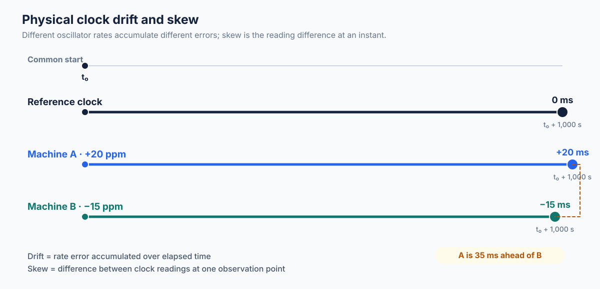
Diagram guide: Draw three aligned horizontal
timelines for reference time, machine A, and machine B. Mark a common
start point and a later observation point. Label A as
+20 ppm, B as −15 ppm, and the observation
interval as 1,000 s. Annotate accumulated errors
(+20 ms, −15 ms) and the pairwise skew
(35 ms). Use separate annotations for rate divergence
(drift) and instantaneous reading difference (skew). Information flow is
not applicable; the visual relationship is comparison of three time
scales.
3.4 Clock offset
Clock offset is the difference between a local clock and a selected reference clock at an observation point. In many NTP descriptions, offset is estimated from four message timestamps. “Offset” is commonly used for the current phase difference; “skew” may be used for the pairwise difference or, in some communities, as a broader synonym. Always define the sign convention in an implementation.
3.5 Why skew matters in production
Last-write-wins databases
Suppose replica A receives a write at real time 10:00:00.100, while replica B receives a later write at 10:00:00.200. If A’s clock is 300 ms ahead and B’s is accurate, A may assign the earlier write the greater timestamp. A timestamp-based merge may choose the older logical update. This is one reason Cassandra warns that correctness of timestamp-based reconciliation depends on time synchronization.
Lease expiration and leader behavior
A lease is a time-limited right to perform an operation. If nodes disagree about time, one node may believe a lease has expired while another believes it remains valid. Safe lease protocols need carefully specified clock assumptions, bounded uncertainty, fencing tokens, or consensus. A fencing token is a monotonically increasing generation/epoch that downstream storage checks; it protects against an old lease holder continuing to write after a newer holder is elected.
Monitoring and tracing
A trace viewer may sort spans by wall clock. Cross-host skew can make a child span appear to begin before its parent, even though the request propagated from parent to child. Preserve parent-child relationships, trace IDs, span IDs, and local durations. Treat wall-clock display order as approximate.
TTL and expiration
A TTL based on wall-clock expiry can behave oddly after a clock jump. Prefer a service that owns expiry semantics and a documented clock model. Within one process, monotonic time is appropriate for timeouts. For persistent distributed expiry, the application must define what happens under clock skew and restart.
4. Clock Synchronization: NTP and PTP
4.1 Network Time Protocol (NTP)
NTP is a protocol family for distributing time information across packet networks. NTPv4 is specified in RFC 5905, with later updates listed by the RFC Editor. The protocol does more than copy a timestamp: it estimates offset and delay, filters noisy measurements, selects among peers, and disciplines the local clock.
NTP hierarchy and strata
A simplified hierarchy looks like this:
- Reference clock: a source such as GNSS, a radio clock, or an atomic-clock-backed source.
- Stratum 1 server: synchronized directly to a reference clock.
- Stratum 2 server: synchronized to a stratum 1 server.
- Higher strata: downstream servers in the synchronization hierarchy.
Stratum is a distance/hierarchy indicator, not a universal quality score. A lower stratum is not automatically more accurate than every higher-stratum source. NTP also uses quality and distance metrics and selects among candidate sources.
A stratum 16 association is considered unsynchronized. Stratum 0 is a reserved/unspecified or control indication in NTP packet semantics (including Kiss-o’-Death use); it is not an ordinary network synchronization tier. A server directly connected to a reference clock is normally stratum 1.
Four-timestamp exchange
NTP estimates the offset using four timestamps:
T1: client sends the request.T2: server receives the request.T3: server sends the response.T4: client receives the response.
Using the convention that positive offset means the server clock is ahead of the client:
Estimated round-trip network delay, excluding server processing time:
Numerical example: Let timestamps, expressed as seconds relative to an arbitrary origin, be:
| Timestamp | Value |
|---|---|
T1 |
100.000 |
T2 |
100.120 |
T3 |
100.125 |
T4 |
100.045 |
Then:
The server is estimated to be 100 ms ahead of the client, and the network round-trip delay estimate is 40 ms. The individual terms include both clock offset and path delay; they must not be read as direct one-way network-delay measurements. NTP estimates the offset and round-trip delay from the four timestamps, but cannot determine the exact one-way delays without additional assumptions.
Important limitation: the standard offset estimate effectively relies on a path-delay model. If forward and reverse delays are asymmetric, the estimate is biased. Network queuing, timestamping at software rather than hardware, packet loss, and variable processing delay add uncertainty.
How NTP disciplines the clock
A simplified operational cycle is:
- Poll configured or discovered peers.
- Capture request and response timestamps.
- Reject malformed, stale, or implausible samples.
- Estimate offset, delay, dispersion, and jitter.
- Filter samples over time.
- Select suitable peers and combine their measurements.
- Adjust the local clock’s phase and frequency.
NTP uses a clock-discipline process rather than blindly setting the clock to every received timestamp. The exact policy depends on the implementation and operating system.
Slewing versus stepping
- Stepping: immediately changes the wall clock by a discontinuous amount. This can be useful when the initial error is large, but it can make wall-clock time jump forward or backward.
- Slewing: gradually changes the clock rate so the offset is absorbed over time. This preserves a smoother clock progression but takes longer to remove a large offset.
Applications should not infer that wall clock is strictly monotonic simply because NTP is enabled. Operating-system and time-daemon policies matter.
NTP accuracy and limitations
NTP can perform very well on a controlled LAN and less well over a congested or asymmetric WAN. There is no single accuracy number that applies to every deployment. RFC 5905 describes an NTPv4 design capable of tens-of-microseconds accuracy under modern workstation and fast-LAN conditions, but Internet paths, software timestamping, and operational conditions can produce much larger errors.
Security matters: a malicious or misconfigured time source can shift clocks and affect logs, certificates, expiry, authentication, and timestamp-based conflict resolution. Use authenticated time where appropriate, protect time-server configuration, monitor source changes, and avoid trusting a single unauthenticated source for high-impact decisions.
4.2 Precision Time Protocol (PTP)
PTP is the Precision Time Protocol standardized in IEEE 1588 for synchronizing clocks in networked measurement and control systems. The standard supports precise synchronization and profiles tailored to different network environments. IEEE’s overview describes sub-microsecond synchronization and, in properly designed systems, more precise performance; actual accuracy depends on network design, hardware, profile, and calibration.
PTP components
- Grandmaster (GM): the selected root time source for a PTP domain.
- Ordinary clock: a PTP clock with a single PTP port.
- Boundary clock: a multi-port clock that synchronizes upstream and serves downstream segments. It helps contain timing variation introduced by intermediate network devices.
- Transparent clock: a network element that measures residence time of PTP messages and adds a correction so downstream clocks can compensate for the time spent in that element.
- Hardware timestamping: timestamping packets close to the network interface/physical layer, reducing variable software and scheduling delay.
The NIST glossary for IEEE 1588 defines key terms such as grandmaster and boundary clock: NIST: Meanings of common terms used in IEEE 1588.
PTP synchronization, conceptually
- Clocks in a PTP domain select a grandmaster using the protocol’s clock-selection procedure.
- The grandmaster sends synchronization messages. A two-step clock may send a follow-up message containing the precise transmit timestamp.
- A slave measures the receive time and estimates its offset from the master.
- Delay measurement messages estimate path delay.
- The slave corrects its local clock; transparent clocks contribute residence-time corrections, while boundary clocks participate as clocks in their own right.
- The process repeats to track oscillator and path changes.
PTP message names include Sync, Follow_Up,
Delay_Req, and Delay_Resp in common end-to-end
delay measurement flows. PTP profiles may choose different measurement
modes and transport details.
Why PTP can outperform NTP
PTP deployments often use hardware timestamping at network interfaces and switches designed to support PTP. A carefully engineered Ethernet timing network can remove much of the variability found in general-purpose Internet paths. NTP remains simpler and widely deployable; PTP is attractive where sub-microsecond or tighter synchronization is required and the operator controls the network and hardware.
Use cases
- Telecommunications radio access and transport synchronization.
- Industrial control and distributed measurement.
- Power-grid monitoring.
- Financial market data capture and event timestamping.
- Scientific instruments and high-speed data acquisition.
PTP is not automatically accurate merely because it is enabled. Incorrect topology, poor grandmaster selection, unsupported switches, asymmetric paths, bad calibration, or software-only timestamping can defeat the target.
4.3 NTP versus PTP
| Dimension | NTP | PTP |
|---|---|---|
| Standard | NTPv4 specified by RFC 5905 and updates | IEEE 1588 family of standards |
| Typical deployment | General-purpose servers and Internet/LAN synchronization | Managed LANs, industrial, telecom, and timing-sensitive networks |
| Timestamping | Often software timestamping; hardware support exists in some systems | Hardware timestamping is commonly central to high-accuracy deployments |
| Network assumptions | Designed for heterogeneous, routed packet networks | Benefits from engineered paths and PTP-aware network devices |
| Intermediate devices | Does not normally require switches to understand NTP timing corrections | Boundary/transparent clocks can participate in timing correction |
| Accuracy | Highly deployment-dependent; tens of microseconds may be achievable in favorable settings, while Internet errors can be much larger | Sub-microsecond is a design goal in suitable configurations; tighter results require specialized engineering |
| Complexity | Relatively easy to deploy | More operational complexity: profiles, grandmaster selection, topology, calibration |
| Best fit | General host clock synchronization | Precise synchronization where network/hardware can be controlled |
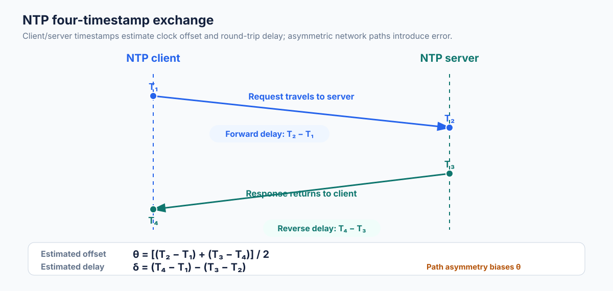
Diagram guide: Show a client and an NTP server with
a request arrow and response arrow. Mark T1 at client
request-send, T2 at server request-receive, T3
at server response-send, and T4 at client response-receive.
Label forward and reverse network delays, server processing time,
estimated offset θ, and estimated round-trip delay
δ. Use a timeline with arrows in the direction of message
flow. Include a note that path asymmetry biases the estimate.
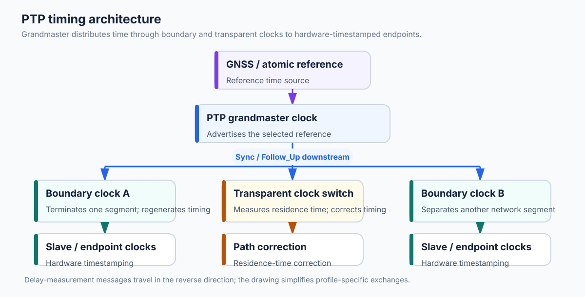
Diagram guide: Show a GNSS/atomic-reference-backed grandmaster at the root, one or more boundary clocks separating network segments, a transparent clock switch on a path, and ordinary/slave clocks at endpoints. Distinguish time distribution from residence-time correction. Draw Sync/Follow_Up arrows downstream and delay-measurement arrows in the return direction. Label PTP domain, hardware timestamp points, and clock hierarchy.
5. Physical-Clock Failure Modes in Distributed Systems
5.1 Synchronization is bounded, not perfect
A synchronization service provides estimates and error bounds. Every timestamp should be thought of as having an uncertainty that depends on its source and the measurement process. Some systems expose that uncertainty explicitly; ordinary wall-clock APIs often do not.
If node A’s clock is within ±5 ms of UTC and node B’s clock is within ±5 ms, the pairwise difference can be as large as 10 ms under worst-case opposing errors. If two events are only 2 ms apart, timestamps cannot reliably establish their order from those bounds alone.
5.2 Clock rollback and forward jumps
Wall-clock time can move backward or forward because of synchronization corrections, administrator changes, VM restore, faulty clock sources, or host lifecycle events. A backward jump can cause:
- Non-monotonic log timestamps.
- Duplicate time-derived IDs.
- Timeouts that appear to have more time remaining.
- Incorrect ordering under timestamp sort.
- A cache TTL or expiry calculation to behave unexpectedly.
A forward jump can prematurely expire tokens or leases, cause scheduled jobs to run early, or make a retention process delete data too soon.
Use monotonic clocks for in-process elapsed time. Use sequence numbers, unique IDs, fencing tokens, or logical clocks for protocol ordering. Keep wall-clock timestamps for human interpretation and time-based policies only when the policy’s clock assumptions are explicit.
5.3 Leap seconds and leap smearing
UTC can include leap-second adjustments. Operating systems, cloud providers, and time daemons may handle them differently. A leap smear spreads the adjustment over a period so the displayed clock changes gradually rather than representing the leap second as a sudden step. A system that uses one smeared time source and one unsmeared time source may see a temporary discrepancy.
Do not compare timestamps from independent time domains without knowing their leap-second policy. For a database or protocol that depends on exact ordering, use its documented time API rather than mixing external UTC sources.
5.4 Virtual machines, containers, and cloud infrastructure
A VM’s clock behavior depends on the hypervisor, virtual clocksource, host timekeeping, pause/resume behavior, migration, and guest tools. A VM can be paused and resumed; elapsed wall time and monotonic time behavior depend on the platform. Containerization alone does not create an independent accurate clock: containers normally share the host kernel’s time facilities, subject to namespaces and runtime policy.
Cloud providers operate time infrastructure, but customers still need to understand the guarantees and configuration relevant to the chosen instance type and region. Monitor offset, synchronization state, time-source identity, and clock-step events. Never assume every host in a fleet has identical uncertainty.
5.5 Engineering checklist
- Use UTC for persisted human-readable event times; store timezone context separately when the original local time matters.
- Use monotonic clocks for durations, deadlines, and local timeout accounting.
- Record both event time and ingestion time in asynchronous pipelines.
- Do not generate uniqueness from wall-clock milliseconds alone.
- Monitor time offset, stratum/source, synchronization status, and sudden jumps.
- Avoid comparing timestamps from different time domains unless the error bounds are known.
- Treat time synchronization as a dependency with alerts and runbooks.
- For lease/lock safety, use fencing tokens or a protocol with explicit clock assumptions.
- Document whether the fleet uses leap smearing.
- Test behavior under backward jumps, forward jumps, VM pause/resume, and time-source loss.
6. Happens-Before and Causality
6.1 What is an event?
An event is an atomic point in a process’s execution for the purpose of reasoning about order. Examples include assigning a value, sending a message, receiving a message, committing a transaction, or appending a log record. The granularity is a modeling choice: a complex operation can be represented as several events.
A distributed execution contains events on multiple processes. Each process observes its own program order. Communication creates cross-process dependencies.
6.2 Happens-before relation
Leslie Lamport introduced the happens-before
relation, written a → b, to capture whether event
a could have causally influenced event b.
For events a and b:
- Program order: if
aandboccur in the same process andaoccurs first, thena → b. - Message order: if
ais the send of messagemandbis the corresponding receive ofm, thena → b. - Transitivity: if
a → bandb → c, thena → c.
The relation is the smallest relation satisfying these rules. It is not defined by wall-clock comparisons.
6.3 Causal and concurrent events
Two events are causally related if
a → b or b → a.
Two events are concurrent, written
a || b, if neither event happens before the other:
Concurrent does not mean that two events occurred at the exact same physical instant. It means the modeled execution contains no causal path from one to the other. Their physical timestamps can differ because clocks differ or because the events actually occurred at different real times without communicating.
6.4 A microservice message example
Suppose service A receives an order, writes an order row, and
publishes OrderCreated. Service B consumes the event and
reserves inventory.
Let:
a1: A validates the order.a2: A commits the order row.a3: A sendsOrderCreated.b1: B receivesOrderCreated.b2: B reserves inventory.
Then:
If service C independently processes an unrelated analytics event, its events may be concurrent with these events. Sorting both services’ logs by wall-clock time does not create a causal relation.
6.5 Comment-and-reply example
User A posts comment c1. User B sees it and replies with
c2. The reply must be causally after the original
comment:
A client that synchronizes chat messages out of order could display the reply before the comment. A causal-ordering transport or application layer can delay the reply until its dependency has been delivered.
A different user may post an unrelated comment c3
without seeing c1; c3 can be concurrent with
c1. A causal system may display the concurrent comments in
either order, provided every client preserves the order of causally
related comments.
6.6 Banking example and its limits
A transfer normally includes a debit and a credit. The fact that the debit event is logged before the credit event does not, by itself, make the transfer atomic. Atomicity requires a transaction protocol or a carefully designed saga/compensation model. Happens-before can express that the credit was triggered by the debit, but it cannot guarantee that both writes commit together.
Likewise, if two transfers are concurrent, their causal relation may be undefined. The bank must select a serializable order or use invariants that remain valid under concurrency. Causality is useful for understanding dependencies; it is not a replacement for isolation or atomic commit.
6.7 Partial order versus total order
Happens-before defines a partial order. Some event pairs are ordered; concurrent pairs are not.
A total order places every pair of distinct events
in one order. A deterministic tie-breaker such as
(Lamport timestamp, process ID) can extend a partial order
into a total order that respects causal order. However, the tie-breaker
is a convention, not evidence that the chosen order reflects physical
chronology.
6.8 Formal properties
- Irreflexive: no event happens before itself, so not
a → a. - Transitive:
a → bandb → cimplya → c. - Asymmetric: if
a → b, thenb → acannot hold. - Partial-order semantics: not every event pair is comparable.
- Concurrent events: neither event is causally before the other.
Some texts define a non-strict causal order with reflexivity; Lamport’s happens-before relation is normally presented as a strict relation.
6.9 Causal consistency
A system is causally consistent if every process observes causally related operations in an order consistent with their causal relation. Concurrent operations may be observed in different orders unless the system adds a stronger ordering guarantee.
Causal consistency is weaker than linearizability. It does not force all concurrent operations into one globally agreed real-time order. It is useful for social feeds, collaborative applications, and geo-replicated stores where preserving dependency order is more important than imposing one total order on all writes.
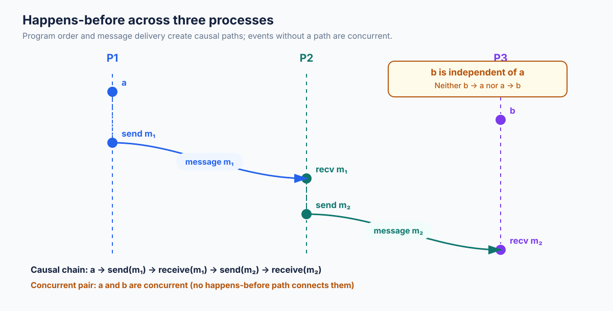
Diagram guide: Draw three vertical process lifelines
(P1, P2, P3) with time flowing
downward. Place local events on each lifeline, draw message arrows from
send to receive, and highlight a transitive chain across processes.
Include a separate pair of events with no message or program-order path
and label them concurrent (a || b). Add a small legend
distinguishing local program-order arrows from message arrows.
7. Lamport Logical Clocks
7.1 Motivation
Physical clocks are approximate and cannot reliably establish causal order. Lamport clocks solve a narrower problem: assign a scalar logical timestamp to each event such that causal order is preserved.
Each process P_i stores an integer counter
C_i, initially zero.
7.2 Algorithm
- Before each local event, increment the local counter.
- Before sending a message, increment the counter and attach its value to the message.
- When receiving a message with timestamp
T_m, set:
- The resulting counter is the timestamp of the receive event.
The increment on receive ensures that the receiving event is later than both the process’s previous events and the message’s send event.
7.3 Three-process worked example
Assume three processes start with counter zero. Each row below is one event.
| Step | Process | Event | Previous clock | Incoming timestamp | Updated clock |
|---|---|---|---|---|---|
| 1 | P1 | Local event a |
0 | — | 1 |
| 2 | P1 | Send m1 to P2 |
1 | — | 2 (message carries 2) |
| 3 | P2 | Local event b |
0 | — | 1 |
| 4 | P2 | Receive m1 |
1 | 2 | max(1,2)+1 = 3 |
| 5 | P2 | Send m2 to P3 |
3 | — | 4 (message carries 4) |
| 6 | P3 | Local event c |
0 | — | 1 |
| 7 | P3 | Receive m2 |
1 | 4 | max(1,4)+1 = 5 |
| 8 | P3 | Send m3 to P1 |
5 | — | 6 (message carries 6) |
| 9 | P1 | Receive m3 |
2 | 6 | max(2,6)+1 = 7 |
| 10 | P1 | Local event d |
7 | — | 8 |
The chain is:
The logical timestamps increase along the chain.
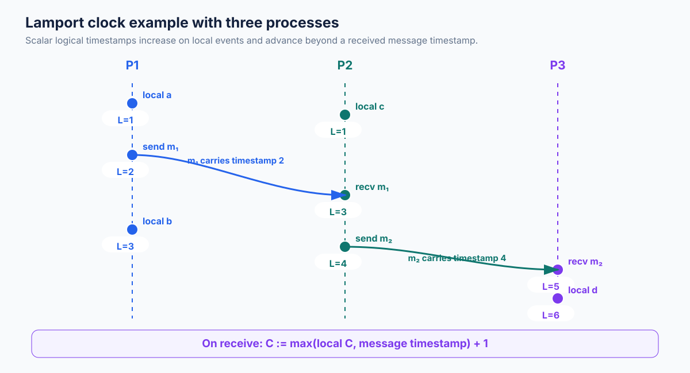
Diagram guide: Draw P1, P2, and P3 lifelines. Place
local events a, b, c, and
d at the steps shown in the event table. Draw
m1:2 from P1 to P2, m2:4 from P2 to P3, and
m3:6 from P3 to P1. Label every send and receive event with
its assigned Lamport counter, including P2 receive 3, P3
receive 5, and P1 receive 7. Time flows
downward.
7.4 Properties and limitations
The fundamental property is:
The converse is false:
Why? A scalar counter can increase on one process without the process
learning anything about events on another process. If event
a has timestamp 4 on P1 and unrelated event b
has timestamp 9 on P2, the timestamps suggest an order but there may be
no causal path.
Lamport clocks cannot identify concurrency. They also do not represent elapsed time. A gap of 100 logical ticks does not mean 100 milliseconds or 100 seconds elapsed.
Deterministic total order
For deterministic ordering, pair each timestamp with a unique process identifier:
Compare lexicographically. This produces a total order if IDs and timestamp values are stable and unique enough for the model. The result respects happens-before because the Lamport component increases along causal edges. It arbitrarily orders some concurrent events.
This deterministic order is useful for algorithms such as distributed mutual exclusion, but a distributed system still needs communication and failure handling to ensure participants agree on requests and permissions.
7.5 Distributed mutual exclusion intuition
In a classic Lamport-style mutual exclusion algorithm, processes
multicast timestamped requests. Each process maintains a request queue
ordered by (timestamp, process ID) and replies to requests.
A process enters the critical section when its request is at the head of
its local queue and it has received the required acknowledgments. When
it exits, it broadcasts a release.
This is a teaching algorithm, not an automatic replacement for a production lock service. It assumes reliable delivery, known membership, and appropriate failure handling. A crashed process can block progress without additional mechanisms.
7.6 Pseudocode
local_event():
clock = clock + 1
return clock
send(message, destination):
clock = clock + 1
transmit(message, timestamp=clock, destination=destination)
receive(message, incoming_timestamp):
clock = max(clock, incoming_timestamp) + 1
deliver(message, timestamp=clock)7.7 Python implementation
from dataclasses import dataclass
@dataclass
class LamportClock:
process_id: str
value: int = 0
def tick(self) -> int:
"""Advance the clock for a local event or message send."""
self.value += 1
return self.value
def send_timestamp(self) -> int:
"""Advance the clock and return the timestamp to attach to a message."""
return self.tick()
def receive(self, remote_timestamp: int) -> int:
"""Merge a remote timestamp and advance for the receive event."""
if remote_timestamp < 0:
raise ValueError("Lamport timestamps must be non-negative")
self.value = max(self.value, remote_timestamp) + 1
return self.value
def total_order_key(self) -> tuple[int, str]:
"""A deterministic tie-break key; not a physical-time claim."""
return (self.value, self.process_id)
if __name__ == "__main__":
p1 = LamportClock("P1")
p2 = LamportClock("P2")
print("P1 local:", p1.tick()) # 1
message_time = p1.send_timestamp() # 2
print("P1 sends at:", message_time)
print("P2 receives at:", p2.receive(message_time)) # 3Expected output:
P1 local: 1
P1 sends at: 2
P2 receives at: 3Production considerations: use a well-defined process ID, persist or reconstruct clock state if required by the protocol, and protect the counter with synchronization when shared across threads. A logical clock does not solve message loss, duplicate delivery, process crashes, membership changes, or consensus.
8. Vector Clocks and Version Vectors
8.1 Why a scalar counter is insufficient
A Lamport clock preserves causal order, but it cannot distinguish a causal relation from an arbitrary scalar ordering. Vector clocks add one counter per participant so that each process records how much of every participant’s history it knows.
For a fixed set of n processes, a vector is:
Component v_i records the number of events from process
P_i represented in the observer’s causal history, under the
vector-clock algorithm’s assumptions.
8.2 Vector-clock algorithm
Each process maintains a vector of length n, initially
all zeros.
- Local event at P_i: increment component
i. - Send: increment component
iand attach the vector to the message. - Receive at P_i: merge the incoming vector and local
vector by taking component-wise maxima; then increment component
ifor the receive event.
For vectors V and W:
The receive rule is:
The final increment records the receive event itself.
8.3 Comparing vector clocks
For two vectors A and B of equal
length:
A < Bif every component of A is less than or equal to the corresponding component of B, and at least one component is strictly smaller.A = Bif every component is equal.AandBare incomparable if some component of A is greater and another is smaller.
Under the standard fixed-membership vector-clock model:
and:
Equal vectors generally mean the same causal frontier/history summary, not necessarily the same unique event. If two different events can be assigned the same vector in a model with event batching or nonstandard update conventions, identity must be represented separately. Under the standard algorithm where every event increments a component, distinct events do not normally share a complete vector at one execution point.
8.4 Worked comparison examples
Causally ordered
A = [2, 1, 0], B = [3, 1, 2].
Each component of A is less than or equal to B, and at least one is
smaller. Therefore A < B: B’s history includes A’s
history.
Concurrent
A = [2, 1, 0], B = [1, 2, 0].
A is larger in component 1, while B is larger in component 2. Neither vector dominates the other. The events are concurrent.
Equal
A = [3, 2, 1], B = [3, 2, 1].
The vectors are equal. In the standard model this indicates equivalent causal knowledge at the vector level; an event ID may still be needed to distinguish records in a storage system.
8.5 Three-process vector-clock example
Processes: P1, P2, P3. Vector order is [P1, P2, P3].
| Step | Process | Event | Previous vector | Incoming | Result |
|---|---|---|---|---|---|
| 1 | P1 | Local a |
[0,0,0] |
— | [1,0,0] |
| 2 | P1 | Send m1 to P2 |
[1,0,0] |
— | [2,0,0] (attach) |
| 3 | P2 | Local b |
[0,0,0] |
— | [0,1,0] |
| 4 | P2 | Receive m1 |
[0,1,0] |
[2,0,0] |
[2,2,0] |
| 5 | P2 | Send m2 to P3 |
[2,2,0] |
— | [2,3,0] (attach) |
| 6 | P3 | Local c |
[0,0,0] |
— | [0,0,1] |
| 7 | P3 | Receive m2 |
[0,0,1] |
[2,3,0] |
[2,3,2] |
| 8 | P3 | Local d |
[2,3,2] |
— | [2,3,3] |
| 9 | P1 | Independent local e |
[2,0,0] |
— | [3,0,0] |
At step 9, e is concurrent with d:
[3,0,0] and [2,3,3] are incomparable. The
wall-clock order of those events is irrelevant to that causal
conclusion.
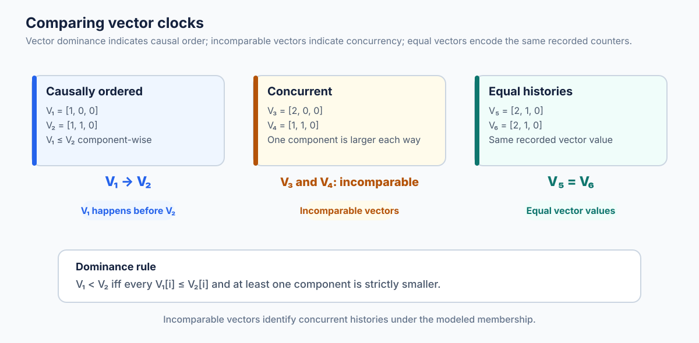
Diagram guide: Show vector pairs
A=[2,1,0], B=[3,1,2] on one side and
C=[2,1,0], D=[1,2,0] on the other. Annotate
why A dominates B and why C/D are incomparable. Use component-wise
arrows or highlighting; identify the component that is larger in each
direction. Include the strict comparison rule.
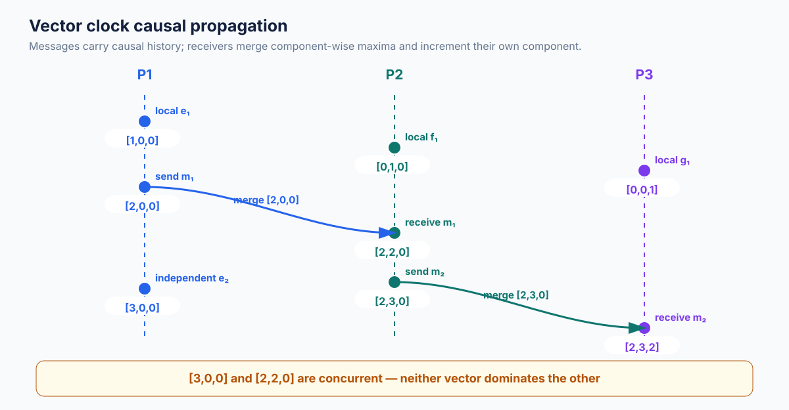
Diagram guide: Draw P1/P2/P3 timelines and annotate
vector clocks at each event from the three-process table. Include
m1 carrying [2,0,0] and m2
carrying [2,3,0]. Show the receive merge as an element-wise
maximum followed by an increment of the receiver’s own component. Add
the independent event on P1 and visually mark it concurrent with P3’s
final event.
8.6 Version vectors
A version vector is a data-versioning structure used by replicated storage systems to summarize which replica updates a value includes. A replica-associated component is incremented when a replica creates a new version; the metadata travels with the value or its version history.
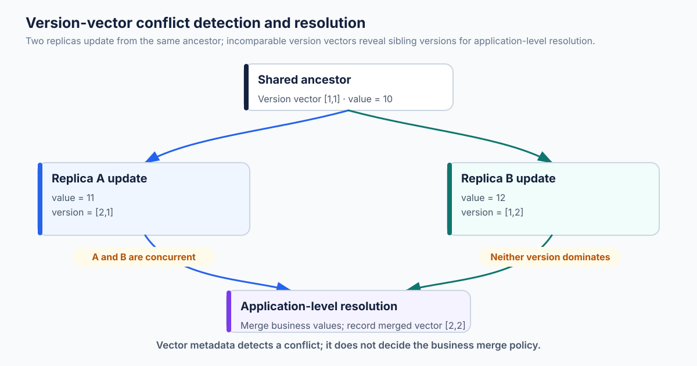
Diagram guide: Show one original value replicated to
replicas A and B, followed by two independent writes that produce
incomparable vectors (for example [2,0] and
[1,1]). Draw both versions converging at a reconciliation
point, label them concurrent siblings, and show a domain resolver/merge
producing a new descendant version. Distinguish causal dominance (one
version supersedes another) from concurrency (neither supersedes the
other). Include vector labels at each stage and arrows for
replication.
A version vector can answer whether one version causally descends from another:
- If version
V1is dominated byV2, thenV2includesV1’s causal history. - If vectors are incomparable, the versions contain concurrent updates and the application must preserve or reconcile them.
Vector clocks versus version vectors
The concepts are closely related and literature sometimes uses the names interchangeably. A useful engineering distinction is:
- Vector clock: a distributed algorithm assigning causal timestamps to events/process states.
- Version vector: causal metadata attached to replicated data versions, used to compare and reconcile versions of an object.
A concrete database’s version-vector design may use per-replica counters, per-object histories, replica epochs, pruning rules, or other metadata. It should not be assumed to be identical to a textbook vector-clock implementation.
8.7 Dynamo-style versioning
The original Amazon Dynamo paper describes a highly available key-value store and uses vector clocks to capture version causality. If a write is based on a version the client has read, the new version causally descends from it. If two writes happen concurrently at different replicas, Dynamo can retain multiple versions (often called siblings) and let the application perform semantic reconciliation.
Example:
- Object starts at version
V0with vector[1,0]. - Replica A writes based on V0, creating
VA=[2,0]. - Replica B independently writes based on V0, creating
VB=[1,1]. VAandVBare incomparable; neither safely overwrites the other as a causal descendant.- The application or domain-specific resolver merges the sibling
values; a subsequent write can descend from both,
e.g.
[2,2]under this simplified two-replica model.
The original Dynamo paper’s vector-clock mechanism is not a claim that every later Amazon database service uses that exact design. Likewise, Apache Cassandra’s current documented mutation conflict resolution is timestamp-based last-write-wins, not original Dynamo’s vector-clock sibling model. Do not infer that the managed Amazon DynamoDB service exposes the original paper’s vector-clock metadata or has an identical internal design merely because of the shared Dynamo lineage.
Riak and dotted version vectors
Riak is a concrete example of version-vector evolution. Its documentation describes traditional vector clocks as causal context for object versions and explains that concurrent values may be retained as siblings when conflict handling is configured to allow multiple values. Riak 2.0 introduced optional dotted version vectors (DVVs) and recommends them over traditional vector clocks in relevant configurations. A DVV associates a specific update event (a “dot”) with the causal context, helping distinguish individual concurrent updates and reduce duplicate sibling creation. The engineering lesson is that causal metadata design has operational consequences: metadata growth and sibling explosion can affect latency and memory. See Riak causal context and Riak conflict resolution.
8.8 Conflict resolution strategies
When concurrent versions are detected, possible strategies include:
- Preserve siblings and ask the application to reconcile.
- Merge using a domain-specific rule (e.g. union of independent cart additions).
- Use a CRDT whose merge operation is associative, commutative, and idempotent.
- Reject conflicts and require a user or transaction retry.
- Apply last-write-wins, accepting that one concurrent value may be discarded.
The correct choice depends on domain semantics. “Latest” is not a universal merge rule.
8.9 Limitations and scalability
Vector metadata can grow with the number of known replicas/processes. Dynamic membership makes the problem harder: a new replica needs an identity/epoch; removed replicas may leave old metadata; identifiers must not be accidentally reused; and a system must decide when a component can safely be garbage-collected.
Some systems use bounded or truncated vectors, dotted version vectors, epoch-based identities, or other compressed causal metadata. These techniques are implementation-specific and trade metadata size against the strength or granularity of causal knowledge.
Vector clocks are particularly natural in a known group of replicas. They are less attractive when the system has millions of short-lived clients or dynamically changing membership.
8.10 Python implementation: vector clocks and version comparison
from dataclasses import dataclass, field
from enum import Enum
from typing import Dict, Iterable
class Relation(Enum):
BEFORE = "before"
AFTER = "after"
EQUAL = "equal"
CONCURRENT = "concurrent"
@dataclass
class VectorClock:
process_id: str
members: tuple[str, ...]
values: Dict[str, int] = field(default_factory=dict)
def __post_init__(self) -> None:
if self.process_id not in self.members:
raise ValueError("process_id must be in members")
if len(set(self.members)) != len(self.members):
raise ValueError("members must be unique")
self.values = {member: int(self.values.get(member, 0)) for member in self.members}
if any(value < 0 for value in self.values.values()):
raise ValueError("vector components must be non-negative")
def tick(self) -> dict[str, int]:
self.values[self.process_id] += 1
return self.snapshot()
def send(self) -> dict[str, int]:
return self.tick()
def receive(self, remote: Dict[str, int]) -> dict[str, int]:
if set(remote) != set(self.members):
raise ValueError("remote vector membership does not match")
for member in self.members:
if remote[member] < 0:
raise ValueError("vector components must be non-negative")
self.values[member] = max(self.values[member], remote[member])
self.values[self.process_id] += 1
return self.snapshot()
def snapshot(self) -> dict[str, int]:
return dict(self.values)
def compare_vectors(a: Dict[str, int], b: Dict[str, int]) -> Relation:
if set(a) != set(b):
raise ValueError("vectors must have the same components")
a_le_b = all(a[k] <= b[k] for k in a)
b_le_a = all(b[k] <= a[k] for k in a)
if a_le_b and b_le_a:
return Relation.EQUAL
if a_le_b:
return Relation.BEFORE
if b_le_a:
return Relation.AFTER
return Relation.CONCURRENT
def merge_versions(versions: Iterable[Dict[str, int]]) -> dict[str, int]:
versions = list(versions)
if not versions:
raise ValueError("at least one version is required")
members = set(versions[0])
if any(set(v) != members for v in versions):
raise ValueError("all versions must use identical membership")
return {m: max(v[m] for v in versions) for m in members}
if __name__ == "__main__":
p1 = VectorClock("P1", ("P1", "P2", "P3"))
p2 = VectorClock("P2", ("P1", "P2", "P3"))
p1.tick() # [1, 0, 0]
message = p1.send() # [2, 0, 0]
p2.tick() # [0, 1, 0]
print("P2 receives:", p2.receive(message)) # [2, 2, 0]
print(compare_vectors(
{"P1": 2, "P2": 1},
{"P1": 1, "P2": 2},
).value) # concurrentExpected output:
P2 receives: {'P1': 2, 'P2': 2, 'P3': 0}
concurrentThe implementation assumes fixed membership and trusted vector metadata. It is suitable for learning and small examples. A production replication protocol must additionally handle membership epochs, replica restarts, authentication, durable metadata, message duplication, and vector pruning.
9. Hybrid Logical Clocks (HLC)
9.1 Why combine physical and logical time?
Physical clocks let engineers ask when an event approximately happened. Lamport clocks preserve causal ordering but are detached from calendar time and can grow with activity rather than elapsed time. Vector clocks detect concurrency precisely under their model but require metadata proportional to membership.
A Hybrid Logical Clock (HLC) combines:
l: a logical physical-time-like component, typically a wall-clock timestamp in a defined unit.c: a logical counter used to distinguish events that share the samelvalue or whose causal dependency would otherwise appear to go backward.
An HLC timestamp is often written (l, c) and compared
lexicographically. The logical counter is not a fractional physical
measurement; it is an ordering component.
9.2 HLC update algorithm
Let pt be the current local physical clock reading,
l the current HLC logical component, and c the
current counter.
Local event
- If
pt > l, setl = ptandc = 0. - Otherwise keep
land incrementc.
This makes progress even if the wall clock is temporarily unchanged or moves backward.
Receive event
A message carries remote HLC (l_m, c_m). Let:
Then update the counter:
- If
l' = l = l_m, setc' = max(c, c_m) + 1. - Else if
l' = l, setc' = c + 1. - Else if
l' = l_m, setc' = c_m + 1. - Else (
l' = ptis strictly greater than both prior logical components), setc' = 0.
Finally set (l,c) := (l',c').
This is a standard HLC formulation; real implementations may encode fields differently and add overflow, clock-jump, and maximum-offset handling.
9.3 Numerical example with three nodes
Assume HLC physical units are milliseconds since an arbitrary epoch. Three nodes have slightly different physical readings.
| Step | Node | Physical pt |
Event | Remote HLC | HLC after event |
|---|---|---|---|---|---|
| 1 | A | 1000 | Local event | — | (1000,0) |
| 2 | A | 1001 | Send to B | — | (1001,0) (message carries it) |
| 3 | B | 998 | Independent local event | — | (998,0) |
| 4 | B | 999 | Receive A’s message | (1001,0) |
(1001,1) |
| 5 | B | 1002 | Local event | — | (1002,0) |
| 6 | C | 1000 | Local event | — | (1000,0) |
| 7 | C | 1001 | Receive B’s message | (1002,0) |
(1002,1) |
| 8 | A | 999 | Wall clock moved backward; local event | — | (1001,1) |
At step 8, A does not move its HLC backward to 999; its logical component advances. This preserves the ordering behavior even when physical time regresses. If a node receives a timestamp far ahead of its local wall clock, its HLC can move ahead; production databases therefore define clock-offset bounds and operational behavior.
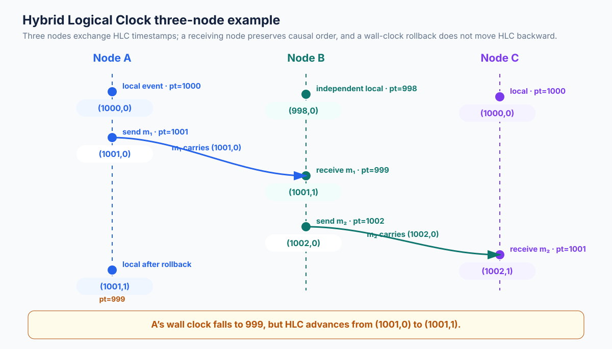
Diagram guide: Draw three node timelines with
physical clock annotations and HLC tuples beside events. Include the
message from A carrying (1001,0) to B, B’s receive update
to (1001,1), and B-to-C message carrying
(1002,0), followed by C’s receive (1002,1).
Show A’s local wall-clock rollback to 999 while HLC advances from
(1001,0) to (1001,1). Label the physical
component l and logical counter c.
9.4 What HLC guarantees—and what it does not
Under the HLC algorithm and correct propagation of timestamps:
HLC timestamps remain close to physical time under the algorithm’s clock and message assumptions, but they are not a globally exact clock. HLC is not a vector clock: it does not provide a general pairwise test for concurrency. If two HLC values are ordered, that does not prove one event caused the other; scalar order can extend causal order arbitrarily.
HLC also does not replace replication, transaction isolation, consensus, or durability. A database can use HLC timestamps as MVCC versions while relying on a separate protocol to ensure transaction correctness.
9.5 CockroachDB and HLC
CockroachDB uses an HLC timestamp with a wall-time component and a logical component. The timestamp is used in transaction and MVCC-related mechanisms. Clock synchronization still matters: CockroachDB’s distributed correctness/performance model has a configured maximum clock offset, and clock uncertainty can lead to transaction restarts or node-health actions. HLC does not mean the system can ignore clock skew.
The CockroachDB design documentation explains its HLC representation and how nodes update local HLC from remote timestamps. The current source also shows safeguards for clock jumps and remote timestamps that are too far ahead. See CockroachDB design documentation and HLC implementation.
9.6 HLC and MVCC
MVCC stores multiple versions of a logical row or key. A read at
timestamp T chooses a version visible at T,
subject to the database’s transaction and isolation rules. A timestamp
space that is monotonic enough and preserves causal dependencies is
useful for assigning versions and reasoning about snapshots.
HLC can provide a compact timestamp that is close to wall time while preserving a Lamport-like causal implication. Whether a particular database can provide a serializable transaction, a consistent snapshot, or a non-blocking read depends on the entire transaction protocol—not just the clock.
9.7 HLC versus vector clocks and TrueTime
| Property | HLC | Vector clock | TrueTime |
|---|---|---|---|
| Physical-time component | Yes | No | Yes, with explicit uncertainty interval |
| Causal implication | Yes, one-way | Yes, vector dominance gives causality under model | Not a replacement for causal metadata; provides bounded physical-time uncertainty |
| Detects concurrency exactly | No | Yes, for covered participants/events | No, overlapping intervals indicate ambiguous physical order, not a complete causal relation |
| Metadata size | Typically two scalar components | Vector proportional to participants | Interval endpoints / uncertainty API |
| Primary use | Database timestamps and ordering | Causal versioning/conflict detection | Strong real-time ordering with bounded uncertainty in Spanner |
9.8 Python implementation
from dataclasses import dataclass
from typing import Callable, Optional
@dataclass(frozen=True, order=True)
class HLCTimestamp:
wall_time: int
logical: int
class HybridLogicalClock:
"""Educational HLC. wall_clock returns integer physical-time units."""
def __init__(self, wall_clock: Callable[[], int]):
self.wall_clock = wall_clock
self.last = HLCTimestamp(0, 0)
def local_event(self) -> HLCTimestamp:
physical = self.wall_clock()
if physical > self.last.wall_time:
self.last = HLCTimestamp(physical, 0)
else:
self.last = HLCTimestamp(self.last.wall_time, self.last.logical + 1)
return self.last
def receive(self, remote: HLCTimestamp) -> HLCTimestamp:
if remote.wall_time < 0 or remote.logical < 0:
raise ValueError("HLC components must be non-negative")
physical = self.wall_clock()
old_l, old_c = self.last.wall_time, self.last.logical
remote_l, remote_c = remote.wall_time, remote.logical
new_l = max(physical, old_l, remote_l)
if new_l == old_l == remote_l:
new_c = max(old_c, remote_c) + 1
elif new_l == old_l:
new_c = old_c + 1
elif new_l == remote_l:
new_c = remote_c + 1
else:
new_c = 0
self.last = HLCTimestamp(new_l, new_c)
return self.last
if __name__ == "__main__":
readings = iter([1000, 1001, 999, 1002])
node = HybridLogicalClock(lambda: next(readings))
first = node.local_event()
sent = node.local_event()
received = node.receive(HLCTimestamp(1002, 0))
after = node.local_event()
print(first, sent, received, after)Expected output:
HLCTimestamp(wall_time=1000, logical=0) HLCTimestamp(wall_time=1001, logical=0) HLCTimestamp(wall_time=1002, logical=1) HLCTimestamp(wall_time=1002, logical=2)This example illustrates an HLC transition, not a complete database clock service. A production implementation also needs a carefully defined timestamp encoding, overflow behavior, concurrency control, remote timestamp validation, metrics, clock-jump handling, and compatibility rules.
10. Google TrueTime and Spanner
10.1 Why TrueTime exists
A globally distributed database may need to assign commit timestamps that respect the real-time order visible to clients. Ordinary NTP-style synchronization gives estimates with error, but a single timestamp value without a bound hides uncertainty. If two regions disagree by a few milliseconds, choosing a commit timestamp from one region may not prove that a later transaction receives a larger timestamp.
Google Spanner addresses this using TrueTime, an API that exposes a time interval rather than a supposedly exact instant. The Spanner paper describes TrueTime as a key enabler for externally consistent transactions at global scale. The system may wait when it needs to ensure that a timestamp is definitely in the past.
10.2 TrueTime interval API
A TrueTime reading is:
The actual reference time is guaranteed to lie within the interval, subject to the system’s stated assumptions and bounds.
For a symmetric interval around its midpoint, the instantaneous error bound is conventionally written as:
Thus the interval width is 2ε. The API endpoints are
authoritative; if an interval is not symmetric, reason from
earliest and latest directly rather than
assuming a midpoint bound.
Two useful predicates are:
TT.after(t): true when the earliest possible current time is later thant.TT.before(t): true when the latest possible current time is earlier thant.
The interval can be narrow or wide. Wider uncertainty reduces the amount of time for which the system can prove an ordering.
10.3 How TrueTime is built, conceptually
The original Spanner paper describes a time infrastructure using multiple modern clock references, including GPS receivers and atomic clocks, with time-master processes and monitoring. The purpose is to maintain a bound on clock uncertainty across Google’s infrastructure.
This is not equivalent to “run NTP and assume clocks are close.” The important interface-level property is that applications can reason with an uncertainty bound. If the system cannot maintain the expected bound, it must not silently pretend that the reading is exact.
10.4 Commit-wait
Spanner assigns a commit timestamp s to a read-write
transaction. To ensure that the timestamp is definitely earlier than the
transaction’s externally visible completion time, the system waits until
TrueTime can prove that s is in the past:
This is commit-wait.
The high-level flow is:
- Execute the transaction and establish its commit order using Spanner’s transaction and replication machinery.
- Select a commit timestamp
sconsistent with the transaction’s serialization constraints. - Wait until the earliest possible current time is greater than
s. - Only then expose successful commit completion to the client.
Why wait? If the commit returned before real time had definitely
passed s, a later transaction could start after the first
client observed completion but receive a timestamp that does not respect
that real-time order. Commit-wait ensures the timestamp is safely in the
past before the client is told the transaction committed.
10.5 Numerical commit-wait example
Assume a transaction is assigned commit timestamp
s = 12:00:00.115, at the upper endpoint of this
illustrative TrueTime reading:
TT.now() = [12:00:00.095, 12:00:00.115]The actual time could still be at or before s;
TT.after(s) is false because earliest = .095
is not greater than .115.
A subsequent reading returns:
TT.now() = [12:00:00.116, 12:00:00.136]Now earliest = .116 > .115, so
TT.after(s) is true and the system may complete
commit-wait.
The amount of wait is related to the uncertainty bound and the commit timestamp’s position relative to the interval. It is not a fixed universal sleep duration.
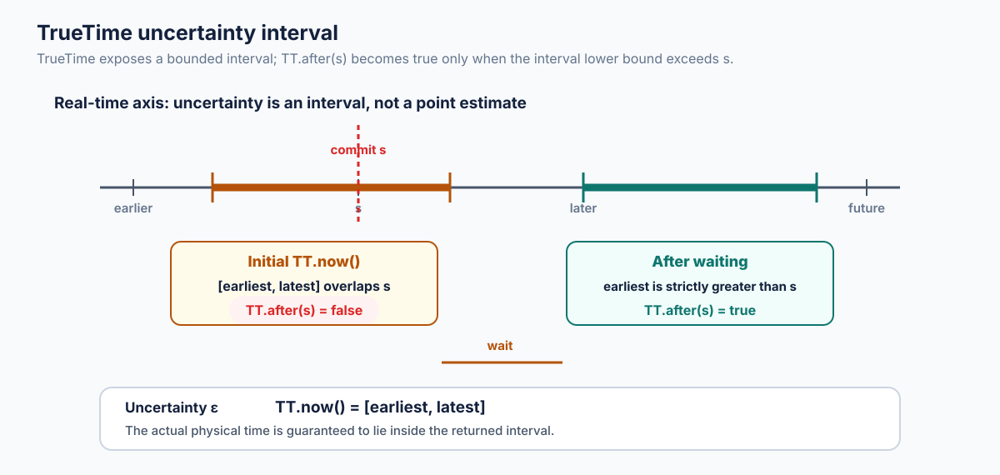
Diagram guide: Draw a real-time horizontal axis.
Show the TrueTime interval with earliest and latest endpoints and the
unknown actual time somewhere inside. Mark a transaction commit
timestamp s. Depict an initial interval that overlaps
s and a later interval whose earliest endpoint is strictly
to the right of s. Label TT.after(s) false for
the first and true for the second. Use a bracket to show uncertainty
ε.
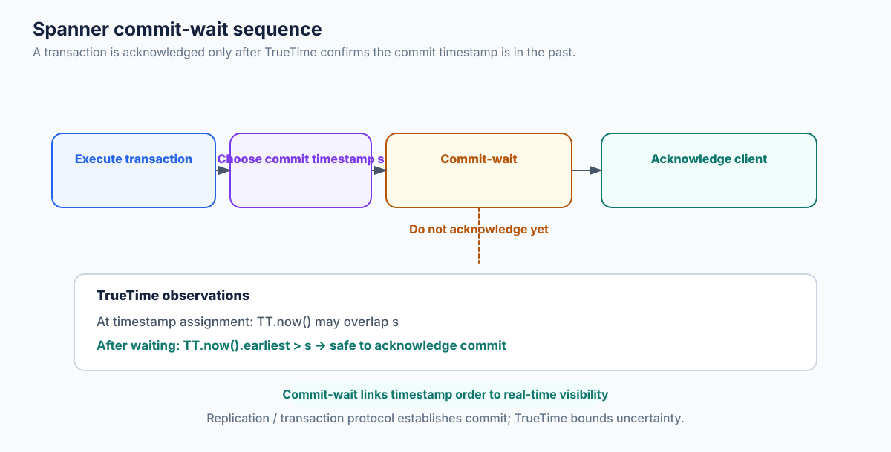
Diagram guide: Show a transaction’s execution,
timestamp assignment s, an uncertainty interval that
initially overlaps s, a wait segment, and the later
TT.now() interval with earliest > s. Show
client acknowledgment only after commit-wait completes. Add a side note
that replication/transaction commit protocol and TrueTime play distinct
roles.
10.6 External consistency, serializability, and linearizability
These terms describe different guarantees.
- Serializability: a concurrent transaction execution is equivalent to some serial order. It does not necessarily require that this serial order respect the order in which non-overlapping transactions occurred in real time.
- Strict serializability / external consistency: serializability plus real-time order. If transaction T1 finishes before T2 begins, T1 must precede T2 in the serialization order.
- Linearizability: an object-level operation history behaves as if each operation took effect atomically at some point between invocation and response, respecting real-time precedence. For multi-object transactions, external consistency is the transaction-level analogue/stronger framing.
An illustrative difference:
- T1 completes a balance update.
- Only after T1 returns, the client starts T2 to read the balance.
A serializable-only database might choose an equivalent serial order that does not match this real-time order in all cases. An externally consistent system must order T1 before T2.
Google’s Cloud Spanner documentation states that default serializable transactions provide external consistency and explains its relation to transaction serial order and observable commit order: Spanner: TrueTime and external consistency.
| Guarantee | What it constrains | Real-time order required? | Multi-object transaction semantics? |
|---|---|---|---|
| Serializability | Equivalence to a serial transaction execution | No | Yes |
| Strict serializability / external consistency | Serial execution plus real-time precedence | Yes | Yes |
| Linearizability | Atomic object operations respecting real-time precedence | Yes | Usually stated for individual objects/operations |
Terminology in database literature can vary. For interviews, state the property formally rather than relying only on a label.
10.7 Spanner architecture overview
Spanner is a globally distributed, synchronously replicated, multi-version database. The 2012 OSDI paper describes the following conceptual elements:
- Universe: the deployment-wide Spanner environment.
- Zones: administrative and failure-management units.
- Spanservers: servers that manage data and tablet state.
- Tablets: partitions of key-range data, stored as a set of timestamped versions.
- Directories: contiguous key ranges managed and placed as units; a directory may be moved between locations.
- Paxos groups: replicated groups that maintain consistent state for their assigned data.
- Leaders: elected/selected leaders in replication groups coordinate writes and certain transaction steps.
- Placement driver: background control-plane functionality that helps move data and balance placement.
- Transaction manager and lock table: coordinate distributed read-write transactions and concurrency control.
- MVCC: retains multiple versions and allows reads at timestamps.
A useful mental model is: data is divided into tablets; tablets are replicated by Paxos groups; transactions may touch one or more groups; the transaction protocol establishes an order and commit state; TrueTime supplies bounded time uncertainty that enables externally consistent commit timestamps.
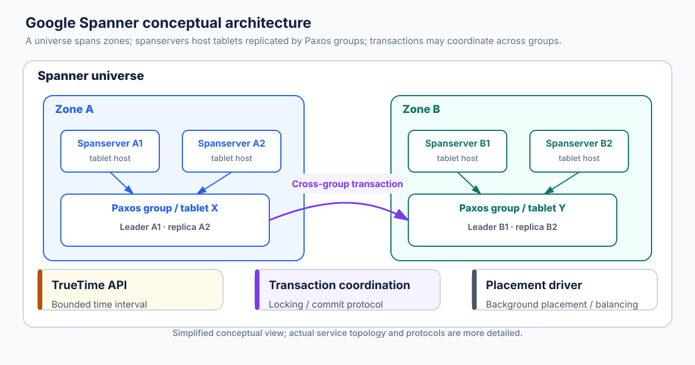
Diagram guide: Show a Spanner universe containing multiple zones. Within each zone, show spanservers hosting tablets. Each tablet belongs to a Paxos group with one leader and multiple replicas. Show a transaction touching two tablets in different groups, with a transaction coordinator/participants, and show TrueTime as a shared time API available to servers. Draw replication messages inside each Paxos group and transaction coordination across groups. Include the placement driver as a background control-plane component, not on the per-request critical path unless explicitly labeled otherwise.
10.8 Relationship between TrueTime, Paxos, MVCC, and transactions
These mechanisms solve different parts of the problem:
- Paxos replication: establishes a replicated agreement/order for updates within a group under the protocol’s fault assumptions.
- Transaction coordination/locking: handles atomicity and isolation across the data touched by a transaction.
- MVCC: keeps versions addressable by timestamps and supports consistent reads at a selected timestamp.
- TrueTime: exposes bounded time uncertainty and allows commit-wait to connect timestamp order to externally observable real time.
TrueTime alone does not replicate data, detect write conflicts, or make a multi-key transaction atomic. Paxos alone does not give a global real-time timestamp order across arbitrary transactions. The guarantees arise from the system’s composition.
10.9 Use cases and trade-offs
Useful workloads include global financial ledgers, inventory reservations across regions, globally consistent account metadata, and transactions that must respect a client’s observed real-time sequence.
Trade-offs include infrastructure complexity, cost of high-quality time sources, geographic network latency, commit-wait, and sensitivity to uncertainty bounds. A system that only needs eventual convergence or per-key linearizability may not justify TrueTime-style infrastructure. The right question is not “is global strong consistency good?” but “does the application require transaction order to respect real time across regions, and is the cost acceptable?”
11. Message-Ordering Guarantees
11.1 FIFO ordering
FIFO (first-in, first-out) ordering guarantees that messages from a given sender are delivered in the order they were sent. It is commonly scoped per sender-to-receiver channel or per partition/log.
If sender P emits m1 and then m2, a FIFO
channel ensures a receiver does not deliver m2 before
m1 from that sender. Sequence numbers can be used to detect
gaps, duplicates, or reordering.
FIFO does not automatically order messages from different senders. If
P1 sends a and P2 sends b concurrently, a
receiver may deliver a,b while another delivers
b,a unless a stronger guarantee exists.
Typical uses: per-user command streams, a single Kafka partition, a single TCP byte stream, or ordered updates from one producer.
11.2 Causal-order broadcast
Causal-order broadcast preserves happens-before
among broadcast messages. If broadcast of message m1
causally precedes broadcast of m2, every correct process
that delivers both must deliver m1 before
m2.
Formally:
A common implementation uses vector clocks or dependency metadata. When a process receives a message, it checks whether the message’s causal predecessors have been delivered. If not, it buffers the message until the dependencies are satisfied.
For a fixed group with vector counters, a message from process
i with vector V can be delivered when the
receiver has already delivered the immediately preceding messages from
i and has observed all causal dependencies represented by
the other vector components. Exact conditions depend on the chosen
broadcast algorithm and whether the communication is reliable, uniform,
or crash-tolerant.
Example
- Alice broadcasts “I am at the station.”
- Bob receives it and broadcasts “I am coming.”
- Carol receives Bob’s message before Alice’s because of network delay.
A causal-ordering layer buffers Bob’s message until Alice’s message is delivered. It does not need to decide whether an unrelated message from Dave happened before or after either one.
Causal ordering is valuable for chat, collaborative editing, replicated metadata, and social feeds. It does not establish a total order over concurrent messages.
11.3 Total-order broadcast
Total-order broadcast (also called atomic broadcast in many distributed-systems contexts) ensures that all correct processes deliver the same set of messages in the same order, subject to the precise agreement and reliability properties of the protocol.
A common property set includes:
- Validity: if a correct process broadcasts a message, it eventually delivers it (under stated liveness assumptions).
- Agreement: if one correct process delivers a message, other correct processes eventually deliver it.
- Integrity: messages are not delivered spuriously or more than once, according to the chosen model.
- Total order: if two correct processes deliver
m1andm2, they deliver them in the same relative order.
Many total-order protocols also preserve causal order, or combine total order with validity/agreement/integrity. The exact definitions vary across texts, so state the properties being assumed.
Leader-based sequencing
A leader can assign each accepted message a monotonically increasing log index. Replicas replicate the ordered log using consensus. Once an entry is committed, each replica applies entries in index order. This produces a shared sequence.
The leader cannot simply broadcast a number and assume correctness: it must handle leader changes, retries, duplicate requests, lost messages, and durability. Consensus (e.g. Raft or Paxos) supplies agreement on the replicated log under its failure model.
11.4 Atomic broadcast and consensus
Atomic broadcast is a reliable broadcast abstraction with total-order delivery. Under common crash-failure models, consensus and atomic broadcast are equivalent in computational power: a consensus protocol can be used to order batches of messages, and an atomic-broadcast service can be used to decide a sequence of values. This is a conceptual equivalence under model assumptions—not a claim that one API call is literally identical to the other.
A replicated state machine consumes a totally ordered command log. If all replicas start from the same state and execute deterministic commands in the same order, they arrive at the same state. Raft’s replicated log is a practical example; see the Raft paper.
11.5 FIFO vs causal vs total order
| Property | FIFO | Causal order | Total order |
|---|---|---|---|
| Preserves sender order | Yes, within its channel/scope | Yes, when sender order is causal | Yes if included in the total-order protocol |
| Preserves cross-sender causality | Not necessarily | Yes | A total order can be chosen to respect causality; protocol details matter |
| Same order at all nodes | Not necessarily | Not for concurrent messages | Yes |
| Orders concurrent messages | No global rule | They may be delivered in either order | Yes, one order is selected |
| Typical metadata | Sequence number / ordered transport | Dependency/vector metadata | Consensus index, sequencer number, or equivalent |
| Coordination cost | Often low within one channel | Depends on reliable causal-delivery mechanism | Usually higher; often consensus or a sequencer |
| Common use | Single producer stream | Chat dependencies, causal replication | Replicated logs, state-machine replication |
11.6 Kafka ordering semantics
Kafka’s ordering guarantee is partition-scoped. Records in a partition are appended to an ordered log and assigned offsets. A consumer reads a partition in log order. A topic with multiple partitions does not have one universal offset order across all partitions.
If two records need a stable relative order, route them to the same partition (often by using the same key) and ensure the producer/consumer configuration and retry behavior preserve the required semantics. Multiple producers writing to one partition are serialized by the append order assigned by the broker, but that is not necessarily their clients’ wall-clock order.
Kafka transactions can provide atomic writes across multiple partitions for supported workflows, but they do not turn multiple partition offsets into one global scalar order. See Apache Kafka’s guarantees and design documentation.
11.7 Raft/Paxos and transaction logs
Raft and Paxos are consensus protocols. In replicated-state-machine usage, they establish a committed log order so replicas apply the same commands in the same sequence. A database may use consensus groups to order writes to a shard or range. Cross-shard transactions require additional coordination beyond each shard’s local log.
11.8 Practical implications
- FIFO is enough when the application only needs one sender’s sequence.
- Causal order is appropriate when dependency order matters but unrelated concurrent events need not be globally ordered.
- Total order is appropriate when replicas must execute exactly the same command sequence.
- A total order can reduce concurrency and require coordination; it should not be imposed without an application need.
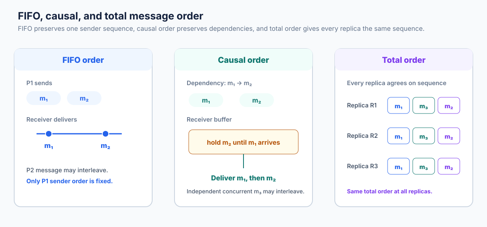
Diagram guide: Use three process lifelines and three
message sets. In the FIFO panel, show two messages from P1 delivered in
send order while P2’s independent message may interleave. In the causal
panel, show P1’s message m1 followed by P2’s dependent
m2, and show receivers buffering m2 until
m1 is delivered; show an independent concurrent
m3 as reorderable. In the total-order panel, show two
receivers delivering all messages in the same sequence
(e.g. m1,m3,m2).
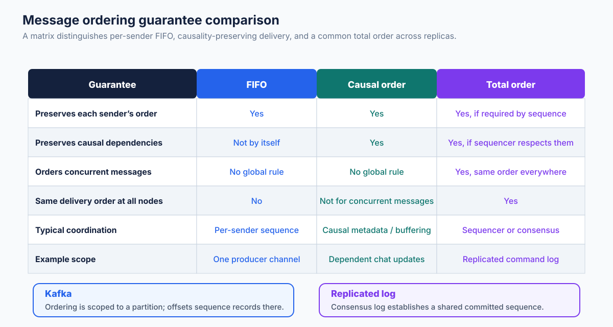
Diagram guide: Create a comparison matrix/visual with columns FIFO, causal, and total order; rows for sender order, causal dependency, concurrent-message order, and all-replica agreement. Use consistent check marks and “not guaranteed” markers. Add a small Kafka example labeled “per partition” and a replicated-log example labeled “consensus order”.
12. Comprehensive Comparison of Clocks
| Mechanism | Representation | Physical-time awareness | Causality | Detects concurrency? | Metadata | Main use |
|---|---|---|---|---|---|---|
| Physical clock | UTC/wall-clock reading | Direct | No inherent guarantee | No | Usually scalar | Dates, schedules, expiry, human logs |
| Lamport clock | Integer counter | No | If a → b, then L(a) < L(b) |
No | One scalar | Causal-compatible deterministic ordering, mutual exclusion algorithms |
| Vector clock | Vector of counters | No | Vector dominance characterizes causality under fixed model | Yes | O(number of participants) | Causal history and concurrent update detection |
| Version vector | Per-version replica counters | No | Version ancestry | Yes, for represented replicas | O(number of tracked replicas) or compressed variant | Replicated data conflict detection |
| HLC | (wall/logical, counter) |
Yes, approximate | Lamport-like one-way causality property | No | Usually two scalar fields | MVCC timestamps, distributed event ordering |
| TrueTime | [earliest, latest] interval |
Yes, with explicit bounded uncertainty | No general vector-style causality test | Not exact causal detection; exposes ambiguous physical order | Interval endpoints / uncertainty | External consistency in Spanner |
12.1 Which mechanism should you choose?
- Need a calendar time or user-visible event date? Use a UTC wall-clock timestamp and preserve provenance.
- Need elapsed duration inside one process? Use a monotonic clock.
- Need a scalar order that respects causality? Use Lamport timestamps, possibly with a deterministic process-ID tie-breaker.
- Need to detect concurrent versions in a known replica group? Use vector clocks or version vectors.
- Need compact timestamps close to wall time with causal monotonicity? Consider HLC, while still handling skew.
- Need a provable relation between commit timestamps and externally observed real-time transaction order? A TrueTime-like bounded-uncertainty design is one approach; Spanner combines it with replication and transaction protocols.
- Need every replica to apply commands in the same order? Use total-order broadcast or a consensus-backed replicated log.
No clock alone solves every distributed-systems problem. Select the abstraction that matches the required guarantee.
13. Real-World Case Studies
The following sections separate publicly documented mechanisms from simplified examples used to teach the underlying idea.
13.1 Google Spanner — TrueTime and external consistency
Problem. A globally distributed transactional database must provide a serial transaction order that respects externally observable real-time order.
Documented design. Spanner divides data into tablets and replicates data using Paxos groups. It uses MVCC timestamps and TrueTime’s bounded uncertainty. A transaction leader chooses a commit timestamp consistent with the transaction protocol; commit-wait delays external completion until the timestamp is definitely in the past.
Why selected. A bounded uncertainty API lets Spanner reason about real-time order instead of assuming that all physical clocks are identical.
Advantages. External consistency, global timestamp ordering, and consistent reads at timestamps across regions.
Limitations. Commit-wait and the time infrastructure introduce latency and operational complexity. Cross-region replication and transaction coordination remain costly.
Engineering lesson. A timestamp API with an explicit uncertainty bound can support stronger guarantees than a best-effort point timestamp—but only when integrated with a correct transaction and replication protocol.
Source: Spanner OSDI 2012 paper, Google Cloud Spanner consistency docs.
13.2 CockroachDB — Hybrid Logical Clocks
Problem. A distributed SQL database needs timestamped MVCC versions and transaction ordering across nodes while remaining practical on commodity server infrastructure.
Documented design. CockroachDB uses HLC timestamps composed of wall time and a logical counter. Remote timestamps update local HLC state. Its design also defines clock-offset limits and mechanisms for handling clock jumps and uncertainty; the implementation has checks for remote times that are too far ahead.
Why selected. HLC gives a compact timestamp near physical time with a causal-ordering property, without a vector whose size grows with all cluster members.
Advantages. Timestamp metadata is compact and useful for MVCC, transaction timestamps, and consistent ordering.
Limitations. HLC does not eliminate clock-skew constraints. Large offsets can cause transaction restarts, reduced performance, or node-health actions.
Engineering lesson. “Logical” does not mean “ignore clocks.” A production HLC database must enforce explicit clock assumptions and surface clock health.
Sources: CockroachDB design documentation, CockroachDB HLC source.
13.3 Amazon Dynamo — Version vectors and conflict detection
Problem. Dynamo was designed as a highly available distributed key-value store for services where availability and latency mattered, and replicas could accept writes during network or node failures.
Documented design. The original Dynamo paper uses versioning and vector clocks to track causal histories. Concurrent versions can be retained as siblings and reconciled by the application.
Why selected. Version vectors allow the system to distinguish a newer version that descends from an older one from two concurrent writes that should not be silently collapsed.
Advantages. Preserves concurrent values for application-level reconciliation and supports availability in the described architecture.
Limitations. Version metadata and sibling resolution add complexity; the application must understand how to merge domain values.
Engineering lesson. Conflict detection and conflict resolution are separate. A causal metadata structure can detect concurrent writes but cannot know whether to merge two shopping-cart edits, two profile edits, or two financial transfers. Riak demonstrates the operational follow-on: preserve siblings when the system cannot infer a winner, then resolve them in the application or by a data-type-specific merge. Its later dotted-version-vector option refines how concurrent updates are identified.
Sources: Amazon Science publication page, author-hosted Dynamo paper text, Riak causal-context documentation.
Important distinction: The original Dynamo paper should not be conflated with every later Amazon database product or with Cassandra’s current timestamp-based LWW design.
13.4 Apache Kafka — Partition ordering and offsets
Problem. A distributed event log needs high throughput and parallel consumption without losing order for events that belong to the same logical stream.
Documented design. Kafka stores each topic as one or more partitions. Each partition is an ordered log; records receive offsets. A consumer reads a partition in log order. Kafka documents total order within a partition, not across all partitions of a topic.
Why selected. Partitioning creates parallelism while retaining per-partition order. A message key can route related records to the same partition.
Advantages. High throughput, consumer parallelism, replayable ordered logs within a partition.
Limitations. A multi-partition topic has no single global order. Cross-partition business workflows need keys, application-level coordination, or transactional processing.
Engineering lesson. Choose a partition key based on the entity whose events must be ordered (account, order, user, device). Do not rely on event timestamps to reconstruct one global order.
Source: Apache Kafka documentation — guarantees.
13.5 Apache Cassandra — Timestamp-based last-write-wins
Problem. Replicas should converge under eventual consistency when multiple nodes can accept mutations.
Documented design. Cassandra assigns timestamps to mutations. They may come from client clocks or, absent a client-provided timestamp, the coordinator node’s clock. Conflicts are resolved using last-write-wins at the relevant column/cell level. Cassandra documentation explicitly notes dependence on clock synchronization such as NTP.
Why selected. Timestamp-based resolution is compact and operationally straightforward compared with retaining arbitrary sibling versions and asking the application to reconcile them.
Advantages. Simple deterministic reconciliation and efficient version selection.
Limitations. Clock skew can cause a logically later write to lose. LWW intentionally discards concurrent values at the conflict granularity. Tombstones and repair/retention behavior require careful operational understanding.
Engineering lesson. Client-side timestamps are part of the data correctness model. Keep clients synchronized, avoid arbitrary timestamps, understand timestamp units and overrides, and test clock-skew scenarios.
Sources: Apache Cassandra data versioning documentation, Cassandra Java driver timestamp documentation.
13.6 Distributed chat — causal ordering
Problem. A reply should not appear before the message it replies to, even if messages travel through different servers or network paths.
Illustrative architecture. Each message carries a parent message ID, conversation sequence/dependency metadata, or a causal timestamp. A recipient stores a message whose dependencies are missing in a pending buffer. Once dependencies arrive, it delivers the message to the UI.
Relevant mechanism. Causal ordering; vector clocks can represent dependencies in a fixed replica group, while application-level parent IDs/sequence metadata can be more suitable for a conversation graph.
Advantages. Preserves conversational meaning without imposing a global order on unrelated concurrent messages.
Limitations. Buffering can increase latency; missing dependencies require retry, recovery, or a policy for unavailable history. A causal guarantee does not resolve conflicting edits to the same message.
Engineering lesson. Preserve causal dependencies in the data model. A globally sorted timestamp list is not a substitute for reply relationships.
13.7 Financial trading — precision time synchronization
Problem. Trading venues, market-data feeds, and surveillance systems need timestamps that can be compared across geographically distributed devices with tightly controlled error.
Illustrative architecture. A trusted time source disciplines a grandmaster; PTP distributes time across managed networks; boundary clocks segment the network; hardware timestamping records packet ingress/egress close to the NIC; monitoring measures offset and path health.
Relevant mechanism. PTP (IEEE 1588), GNSS-backed timing, hardware timestamping, and carefully managed time domains.
Advantages. More precise event correlation and ordering analysis than uncontrolled software timestamps.
Limitations. Accuracy depends on calibrated equipment, topology, oscillator behavior, GNSS availability/spoofing risk, and operational monitoring. Timestamp precision is not a substitute for exchange sequencing or business-rule correctness.
Engineering lesson. Record both source timestamps and sequence numbers. Precision time helps correlate events; a venue’s matching-engine sequence or authoritative event ID may remain the definitive order within that venue.
Reference: IEEE 1588-2019, NIST IEEE 1588 terminology.
13.8 Collaborative editing — causality and concurrent operations
Problem. Multiple users edit a document while disconnected or connected through different regions. Operations can arrive out of order and can conflict.
Illustrative architecture. Clients create operations with stable IDs, causal dependencies, and document/version metadata. A synchronization service distributes operations. The system uses Operational Transformation (OT), a CRDT, or another merge algorithm to reconcile concurrent changes. Causal metadata helps ensure prerequisites are observed before dependent operations.
Relevant mechanism. Happens-before, vector/version metadata, causal delivery, and CRDT/OT-specific transformation or merge rules.
Advantages. Users can make progress concurrently; unrelated operations can merge without requiring a single global sequencer for every keystroke.
Limitations. Causality alone does not define how simultaneous insertions or deletions should merge. OT requires correct transformation rules and operation context; CRDTs require data types whose merge/update rules meet their algebraic properties.
Engineering lesson. Separate causal ordering from conflict semantics. A clock tells the system about dependency; the collaborative data type tells it how to merge.
14. Practical Engineering Implementations
The examples in this section are deliberately small enough to understand and run. They demonstrate the core data structures and invariants; they are not production distributed protocols. In particular, they do not collectively provide authentication, durable state, consensus, failure detection, membership management, retries, message deduplication, or Byzantine-fault protection.
14.1 Physical timestamp generation and monotonic duration measurement
Concept. Wall-clock timestamps are useful for dates. Monotonic clocks are useful for measuring elapsed time. Keep the two purposes separate.
import time
from datetime import datetime, timezone
def utc_timestamp() -> tuple[int, str]:
"""Return epoch nanoseconds and an ISO-8601 UTC rendering."""
epoch_ns = time.time_ns()
seconds, nanos = divmod(epoch_ns, 1_000_000_000)
dt = datetime.fromtimestamp(seconds, tz=timezone.utc)
iso = dt.strftime("%Y-%m-%dT%H:%M:%S") + f".{nanos:09d}Z"
return epoch_ns, iso
def measure_operation(operation) -> tuple[object, int]:
"""Run operation and return its result plus monotonic elapsed nanoseconds."""
started = time.monotonic_ns()
result = operation()
elapsed = time.monotonic_ns() - started
return result, elapsed
if __name__ == "__main__":
timestamp_ns, rendered = utc_timestamp()
result, elapsed_ns = measure_operation(lambda: sum(range(100_000)))
print("UTC:", rendered)
print("epoch ns:", timestamp_ns)
print("result:", result)
print("elapsed ns:", elapsed_ns)Sample output shape (the actual values vary by run):
UTC: 2026-11-05T16:30:00.123456789Z
epoch ns: 1793896200123456789
result: 4999950000
elapsed ns: <runtime-dependent integer>Edge cases and production notes:
datetime conversion above assumes the host’s wall clock is
meaningful. time.time_ns() can move backward. Never use it
to calculate a timeout. time.monotonic_ns() has no portable
epoch and must not be sent to another host as a date. Nanosecond output
is a representation unit, not an accuracy promise.
14.2 Clock-drift simulation
Concept. Model two clocks with different fractional frequency errors and compare them with a reference. This is a simplified constant-rate model.
from dataclasses import dataclass
@dataclass
class SimulatedClock:
name: str
drift_ppm: float
def reading(self, real_elapsed_seconds: float) -> float:
rate = 1.0 + self.drift_ppm * 1e-6
return real_elapsed_seconds * rate
def simulate() -> None:
fast = SimulatedClock("fast", 20.0)
slow = SimulatedClock("slow", -15.0)
for elapsed in (60, 600, 3600, 86400):
ref = elapsed
a = fast.reading(elapsed)
b = slow.reading(elapsed)
print(
f"t={elapsed:>6}s | fast error={(a-ref)*1000:>8.3f} ms | "
f"slow error={(b-ref)*1000:>8.3f} ms | "
f"pair skew={(a-b)*1000:>8.3f} ms"
)
if __name__ == "__main__":
simulate()Expected values (rounded):
t= 60s | fast error= 1.200 ms | slow error= -0.900 ms | pair skew= 2.100 ms
t= 600s | fast error= 12.000 ms | slow error= -9.000 ms | pair skew= 21.000 ms
t= 3600s | fast error= 72.000 ms | slow error= -54.000 ms | pair skew= 126.000 ms
t= 86400s | fast error=1728.000 ms | slow error=-1296.000 ms | pair skew=3024.000 msEdge cases: Actual oscillators have time-varying drift, temperature response, aging, and synchronization corrections. A realistic simulator would model noise, frequency wander, offset corrections, and network delay.
14.3 NTP offset and delay calculation
Concept. Apply the four-timestamp equations from RFC 5905. This function does not implement NTP packet exchange, clock filtering, peer selection, or clock discipline.
from dataclasses import dataclass
@dataclass(frozen=True)
class NtpEstimate:
offset_seconds: float
round_trip_delay_seconds: float
def estimate_ntp(t1: float, t2: float, t3: float, t4: float) -> NtpEstimate:
"""Estimate server-minus-client offset and network round-trip delay."""
offset = ((t2 - t1) + (t3 - t4)) / 2.0
delay = (t4 - t1) - (t3 - t2)
if delay < 0:
raise ValueError("negative delay estimate: check timestamps/clock assumptions")
return NtpEstimate(offset, delay)
if __name__ == "__main__":
estimate = estimate_ntp(100.000, 100.120, 100.125, 100.045)
print(f"server offset: {estimate.offset_seconds * 1000:.1f} ms")
print(f"round trip: {estimate.round_trip_delay_seconds * 1000:.1f} ms")Output:
server offset: 100.0 ms
round trip: 40.0 msEdge cases: Use high-resolution timestamps and a consistent time scale. Check for invalid, repeated, or replayed timestamps. Network asymmetry biases offset estimates. The full NTP protocol uses filtering and selection across samples and peers; the arithmetic alone is not a time server.
14.4 Lamport clock implementation
The full implementation appears in Section 7.7. Its essential operation is:
Use it when one scalar timestamp that respects causality is enough. Do not use it to infer concurrency or elapsed time.
14.5 Vector clock implementation and comparison
The full implementation appears in Section 8.10. The core operations are:
The comparison helper must first verify identical vector membership. Otherwise component-wise comparison is undefined or misleading.
14.6 Version-vector conflict detection
Concept. A version vector attached to a value can tell the store whether one value descends from another or whether the updates are concurrent.
from enum import Enum
class VersionRelation(Enum):
OLDER = "older"
NEWER = "newer"
SAME = "same"
CONCURRENT = "concurrent"
def version_relation(a: dict[str, int], b: dict[str, int]) -> VersionRelation:
if set(a) != set(b):
raise ValueError("version vectors must have the same replica set")
a_le_b = all(a[r] <= b[r] for r in a)
b_le_a = all(b[r] <= a[r] for r in a)
if a_le_b and b_le_a:
return VersionRelation.SAME
if a_le_b:
return VersionRelation.OLDER
if b_le_a:
return VersionRelation.NEWER
return VersionRelation.CONCURRENT
if __name__ == "__main__":
v_a = {"A": 2, "B": 0}
v_b = {"A": 1, "B": 1}
print(version_relation(v_a, v_b).value)Output:
concurrentA production store must also define how replica identities change, how versions are persisted, how old components are pruned, and how application-level conflict resolution works. A vector says “these updates are concurrent”; it does not say whether a profile field should use a merge, a manual choice, or a rejection.
14.7 Hybrid logical clock implementation
The full HLC class appears in Section 9.8. Its receive rule is the main part to review. In production, test it under repeated physical readings, backward jumps, large forward jumps, remote timestamps ahead of local time, counter overflow, and concurrent access from multiple threads.
14.8 FIFO message ordering with per-sender sequence numbers
Concept. A receiver can buffer messages until the next expected sequence number from each sender is available. This example gives FIFO order independently for each sender; it does not impose an order between different senders.
from collections import defaultdict
class FifoReceiver:
def __init__(self):
self.next_expected = defaultdict(lambda: 1)
self.pending = defaultdict(dict)
def receive(self, sender: str, sequence: int, payload: str) -> list[tuple[str, int, str]]:
if sequence < 1:
raise ValueError("sequence numbers start at 1")
expected = self.next_expected[sender]
if sequence < expected:
return [] # Duplicate or stale delivery; ignore in this toy example.
self.pending[sender][sequence] = payload
delivered = []
while self.next_expected[sender] in self.pending[sender]:
current = self.next_expected[sender]
value = self.pending[sender].pop(current)
delivered.append((sender, current, value))
self.next_expected[sender] += 1
return delivered
if __name__ == "__main__":
receiver = FifoReceiver()
print(receiver.receive("A", 2, "second"))
print(receiver.receive("A", 1, "first"))
print(receiver.receive("B", 1, "independent"))Output:
[]
[('A', 1, 'first'), ('A', 2, 'second')]
[('B', 1, 'independent')]Edge cases: The implementation has no durable
pending store, retransmission, authentication, or sender-epoch handling.
If sequence 1 is permanently lost, sequence 2 remains buffered
indefinitely. Use (sender ID, sender epoch, sequence) when
senders can restart, and define gap recovery.
14.9 Causal message ordering with vector dependencies
Concept. A message from sender p is
deliverable when it is the next message from p and all
dependencies from other processes have already been delivered. This
compact teaching implementation assumes a fixed set of processes and
reliable broadcast semantics.
from dataclasses import dataclass
from collections import deque
@dataclass(frozen=True)
class CausalMessage:
sender: str
vector: dict[str, int]
payload: str
class CausalReceiver:
def __init__(self, members: tuple[str, ...], process_id: str):
if process_id not in members or len(set(members)) != len(members):
raise ValueError("invalid membership")
self.members = members
self.process_id = process_id
self.clock = {member: 0 for member in members}
self.pending = deque()
def can_deliver(self, message: CausalMessage) -> bool:
if set(message.vector) != set(self.members):
raise ValueError("message vector membership mismatch")
sender = message.sender
if sender not in self.clock:
raise ValueError("unknown sender")
if message.vector[sender] != self.clock[sender] + 1:
return False # A prior message from the same sender is missing.
for member in self.members:
if member != sender and message.vector[member] > self.clock[member]:
return False # A causal dependency is missing.
return True
def receive(self, message: CausalMessage) -> list[str]:
self.pending.append(message)
delivered = []
made_progress = True
while made_progress:
made_progress = False
for _ in range(len(self.pending)):
candidate = self.pending.popleft()
if self.can_deliver(candidate):
self.clock[candidate.sender] = candidate.vector[candidate.sender]
delivered.append(candidate.payload)
made_progress = True
else:
self.pending.append(candidate)
return delivered
if __name__ == "__main__":
receiver = CausalReceiver(("P1", "P2", "P3"), "P3")
dependent = CausalMessage("P2", {"P1": 1, "P2": 1, "P3": 0}, "reply")
predecessor = CausalMessage("P1", {"P1": 1, "P2": 0, "P3": 0}, "original")
print(receiver.receive(dependent)) # []: waits for P1's dependency
print(receiver.receive(predecessor)) # ['original', 'reply']Output:
[]
['original', 'reply']Important: This example models a receive buffer and vector dependency rule, not the full reliable causal-broadcast protocol. A real implementation needs retransmission, duplicate suppression, durable delivery state, membership changes, authentication, and a definition of what happens when a dependency can never be recovered.
14.10 Total order using a centralized sequencer
Concept. A single logical sequencer assigns monotonically increasing sequence numbers. Consumers apply messages by sequence. This creates a total order in the sequencer’s accepted order, but the sequencer itself is a single point of failure unless replicated.
from dataclasses import dataclass
@dataclass(frozen=True)
class OrderedRecord:
sequence: int
message_id: str
payload: str
class Sequencer:
def __init__(self):
self.next_sequence = 1
self.seen_ids: dict[str, OrderedRecord] = {}
def append(self, message_id: str, payload: str) -> OrderedRecord:
if message_id in self.seen_ids:
return self.seen_ids[message_id] # Idempotent retry.
record = OrderedRecord(self.next_sequence, message_id, payload)
self.next_sequence += 1
self.seen_ids[message_id] = record
return record
if __name__ == "__main__":
sequencer = Sequencer()
print(sequencer.append("req-1", "debit"))
print(sequencer.append("req-2", "credit"))
print(sequencer.append("req-1", "debit retry"))Output:
OrderedRecord(sequence=1, message_id='req-1', payload='debit')
OrderedRecord(sequence=2, message_id='req-2', payload='credit')
OrderedRecord(sequence=1, message_id='req-1', payload='debit')Production considerations: Persist the sequence and idempotency map atomically. Replicate the sequencer through consensus, define when a sequence is committed, and specify recovery after failover. A single in-memory counter is not a fault-tolerant total-order service.
14.11 Event ordering with timestamps and tie-breakers
Concept. For reproducible reporting, a system may
sort events by
(event timestamp, source ID, source sequence, event ID).
This is a deterministic presentation order, not proof of causality.
from dataclasses import dataclass
@dataclass(frozen=True)
class Event:
timestamp_ns: int
source_id: str
source_sequence: int
event_id: str
payload: str
def presentation_order(events: list[Event]) -> list[Event]:
return sorted(
events,
key=lambda e: (
e.timestamp_ns,
e.source_id,
e.source_sequence,
e.event_id,
),
)
if __name__ == "__main__":
events = [
Event(100, "node-B", 1, "b1", "B event"),
Event(100, "node-A", 2, "a2", "A event 2"),
Event(99, "node-A", 1, "a1", "A event 1"),
]
for event in presentation_order(events):
print(event.timestamp_ns, event.source_id, event.event_id)Output:
99 node-A a1
100 node-A a2
100 node-B b1Use this for deterministic dashboards or batch processing only when the chosen ordering is acceptable. To preserve causality, include causal metadata or dependencies; to create a globally agreed order, use a sequencer or consensus-backed log.
14.12 Choosing and validating an implementation
| Need | Example in this chapter | Additional production requirements |
|---|---|---|
| Event timestamp | time.time_ns() |
Trusted source, UTC policy, provenance, clock monitoring |
| Duration | time.monotonic_ns() |
Correct timeout/deadline propagation and cancellation |
| Drift modeling | SimulatedClock |
Noise, temperature, synchronization feedback, uncertainty model |
| Offset estimate | estimate_ntp() |
Full packet protocol, filtering, peer selection, authentication, discipline |
| Causal scalar | LamportClock |
Reliable message handling, IDs, failure recovery |
| Concurrency detection | VectorClock |
Membership/epoch management, metadata pruning |
| Version conflict | version_relation() |
Durable version store and domain-specific merge |
| Hybrid timestamp | HybridLogicalClock |
Bound checks, overflow, concurrent access, operational monitoring |
| Per-sender ordering | FifoReceiver |
Durable gap handling, retries, sender epochs |
| Causal delivery | CausalReceiver |
Reliable broadcast, duplicate suppression, dependency recovery |
| Total order | Sequencer |
Consensus, persistence, failover, idempotency |
| Deterministic display | presentation_order() |
Clear statement that order is not causal or globally authoritative |
15. Mathematical Concepts and Formulas
This section collects the most frequently used equations. Always state units and sign conventions before calculating.
15.1 Clock rate error and accumulated drift
Let ρ be fractional frequency error in seconds per
second and t elapsed real time:
If drift is given as d_ppm:
Example: d_ppm = 40, t = 3,600 s:
A 40 ppm fast clock gains approximately 144 ms in one hour under the constant-rate model.
15.2 Clock skew
For clock readings C_A(t) and C_B(t) at the
same real instant:
If C_A=10:00:00.120 and C_B=10:00:00.075, A
is 45 ms ahead of B.
15.3 Clock offset
Relative to a reference clock R(t):
A positive offset means A is ahead under this convention. Other specifications may define offset with the opposite sign; do not mix conventions.
15.4 NTP offset and delay
Given client/server timestamps T1 through
T4:
θ estimates server-minus-client offset; δ
estimates round-trip delay after subtracting server processing time. The
estimate is affected by path asymmetry and timestamp uncertainty.
15.5 Pairwise synchronization error
If node A is within ±ε_A of a reference and B is within
±ε_B, then a conservative bound on their pairwise
difference is:
This is a worst-case bound. If both are within ±5 ms, their pairwise error can be as large as 10 ms.
15.6 Happens-before
The causal relation is generated by program order, send-to-receive order, and transitivity:
Concurrency:
15.7 Lamport update
Local/send event:
Receive event with remote timestamp T_m:
Guarantee:
The converse does not hold.
15.8 Vector-clock comparison and merge
Element-wise merge:
Strict dominance:
Concurrency:
Under the standard vector-clock model, vector dominance is equivalent to causal precedence for the represented events.
15.9 HLC update
For a local event with physical time pt:
On receive, first:
Then choose the logical counter according to which values equal
l':
The precise implementation must account for equalities involving all three terms and any chosen encoding; the case expression above is the standard conceptual update.
15.10 TrueTime uncertainty interval and commit-wait
TrueTime exposes:
The actual time lies within the interval under the service’s
guarantees. For a commit timestamp s, commit-wait ends
when:
This proves that the timestamp is definitely in the past before the commit is reported complete.
15.11 Message ordering conditions
For FIFO from sender p:
For causal broadcast:
For total order, for any two messages delivered by two correct processes, their relative delivery order must agree at both processes:
These are abstractions; concrete protocols add validity, agreement, integrity, durability, and fault-model assumptions.
16. Interview Preparation
The following 56 questions are organized by difficulty. Strong answers define the guarantee, describe the mechanism, state what it does not guarantee, and provide a concrete example.
16.1 Beginner questions
1. Why is time difficult in a distributed system?
Each machine has an independent oscillator and clock state. Messages take nonzero, variable time to travel, and the sender cannot know the receiver’s exact clock at the same instant. Synchronization estimates clock offset but leaves uncertainty. Therefore a distributed system cannot assume one perfectly shared clock.
Follow-up: How do you handle the uncertainty? Use explicit bounds where available, logical clocks for causal order, and protocols such as consensus or transaction coordination for stronger shared ordering.
2. What is the difference between a physical clock and a logical clock?
A physical clock approximates a real time scale such as UTC. A logical clock assigns timestamps based on event order and message dependencies. A physical timestamp answers approximately “when”; a logical timestamp helps answer “what must have happened before what.”
Trap: A logical clock’s counter is not elapsed seconds.
3. What is clock drift?
Drift is a difference in clock rate relative to a reference. A 20 ppm fast clock gains about 72 ms in an hour. Drift is caused by oscillator tolerance and environmental effects.
4. What is clock skew?
Skew is the difference between two clock readings at a particular observation point. If A reads 12:00:00.050 and B reads 12:00:00.010, A is 40 ms ahead. Drift concerns rate; skew concerns current difference.
5. What is clock offset?
Offset is a clock’s difference from a chosen reference, under a stated sign convention. NTP estimates server-minus-client offset from four timestamps. Do not confuse a point offset estimate with a guaranteed error bound.
6. What is the difference between wall-clock and monotonic time?
Wall-clock time represents calendar/epoch time and may jump due to corrections. Monotonic time is intended for measuring elapsed intervals and should not move backward within its scope. Use wall time for dates and monotonic time for timeouts.
7. What is NTP?
NTP is a network protocol for synchronizing clocks. It exchanges timestamps, estimates offset and round-trip delay, filters samples, selects peers, and disciplines local clock phase/frequency. Accuracy depends heavily on the network and host setup.
8. What is PTP?
PTP is IEEE 1588 Precision Time Protocol, designed for precise synchronization on networked systems. It commonly uses a grandmaster, boundary/transparent clocks, and hardware timestamping in high-accuracy deployments.
9. NTP versus PTP: when would you choose each?
Use NTP for general host synchronization across ordinary networks. Use PTP when a managed network and hardware support the precision requirements of telecom, industrial, scientific, or financial timing. Neither has a universal guaranteed accuracy independent of deployment.
10. What is happens-before?
It is Lamport’s causal partial order. It is generated by program
order, message send-to-receive order, and transitivity.
a → b means information from a could causally influence
b.
11. What are concurrent events?
Events are concurrent if neither happens before the other. They need not occur at exactly the same physical instant. They simply have no causal path between them in the modeled execution.
12. What is a Lamport clock?
A Lamport clock is a scalar counter per process. Increment before
local/send events; on receive, set C=max(C, remote)+1. It
ensures causal events get increasing timestamps, but cannot detect
concurrency.
13. Does a larger Lamport timestamp mean an event happened later in real time?
No. It only means the event is later in the Lamport total-order extension if tie-breaks are applied. A larger timestamp does not prove causal dependence or exact physical chronology.
14. What does FIFO message delivery guarantee?
It preserves send order for messages from the same sender within the channel’s defined scope. It does not decide the relative order of concurrent messages from different senders.
16.2 Intermediate questions
15. Why are vector clocks more informative than Lamport clocks?
A vector records per-process causal knowledge. Comparing two vectors can establish causal dominance or detect incomparability (concurrency) under fixed membership. A Lamport scalar cannot make that distinction.
16. How do you compare two vector clocks?
A is before B if every component of A is less than or equal to B and at least one is strictly smaller. If each has a component greater than the other, they are concurrent. Equal vectors represent equal causal summaries.
17. What happens when a process receives a message with a vector timestamp?
It takes the component-wise maximum of local and remote vectors, then increments its own component for the receive event. The message’s vector carries the sender’s causal knowledge.
18. What is a version vector?
It is causal metadata attached to replicated data versions. It lets a store determine whether one version descends from another or whether two versions are concurrent. It is related to vector clocks but is used specifically for data-version ancestry.
19. How does Dynamo use version vectors?
The original Dynamo design uses vector clocks to track versions. Causally later writes supersede earlier versions; concurrent writes can be retained as siblings and reconciled by application logic. Do not assume every Amazon database service uses the original Dynamo implementation.
20. What is the main limitation of vector clocks?
Metadata grows with the number of tracked participants. Dynamic membership, replica retirement, and vector garbage collection complicate the design. They are not a zero-cost concurrency detector.
21. What is HLC?
Hybrid Logical Clock combines a wall-time-like component with a logical counter. It remains close to physical time under assumptions while preserving a Lamport-like causal ordering property. It is compact compared with full vector clocks.
22. Does HLC detect concurrent events?
No, not in the general vector-clock sense. HLC is scalar-like and preserves causal order in one direction. A sorted pair of HLC timestamps does not prove causality.
23. Why does CockroachDB use HLC?
HLC provides compact timestamps near wall time and a causal ordering property useful for distributed transaction/MVCC timestamping. CockroachDB still enforces clock-offset assumptions; HLC does not make clock skew irrelevant.
24. What is clock uncertainty?
It is the bound or range within which the actual time is believed to lie. Two timestamps with overlapping uncertainty intervals may not be safely ordered by physical time alone.
25. How does clock skew affect Cassandra?
Cassandra resolves conflicting mutations using timestamps, often generated by clients or coordinator clocks. A fast clock can assign a higher timestamp to an older write, causing it to win under last-write-wins. Time synchronization and careful timestamp generation are therefore important.
26. What is Kafka’s ordering guarantee?
Kafka guarantees order within a partition. Records in different partitions do not share one global order. A key can route related events to one partition to preserve their relative order.
27. Does FIFO imply causal ordering?
Not globally. FIFO preserves each sender’s order. If a sender’s second message depends on a message from another sender, per-sender FIFO alone does not ensure the dependency is delivered first.
28. Does causal ordering imply total ordering?
No. Causal ordering preserves only comparable, causally related messages. Concurrent messages may be delivered in different orders. Total ordering requires all replicas to agree on one relative order for every pair of delivered messages.
29. Why use a process ID to break Lamport-clock ties?
It creates a deterministic total order over events with equal Lamport values. The process ID is an arbitrary tie-breaker; it does not prove physical time or causality.
30. What is an MVCC timestamp used for?
It labels versions so a read can select the version visible at a timestamp. The transaction protocol must still ensure that chosen timestamps and reads/writes obey the database’s isolation guarantees.
16.3 Advanced questions
31. What is TrueTime?
TrueTime is Google’s distributed time API that returns an interval
[earliest, latest] containing the actual time under its
guarantees. Spanner uses the uncertainty interval when assigning
transaction timestamps and implementing commit-wait.
32. Why does TrueTime return an interval instead of one timestamp?
A point estimate hides uncertainty. An interval makes the bound explicit, allowing the application to determine whether a timestamp is definitely before or after the present. If intervals overlap, physical ordering may remain ambiguous.
33. Explain Spanner commit-wait.
After choosing commit timestamp s, Spanner waits until
TT.after(s) is true—equivalently, the earliest possible
current time is greater than s. It then reports commit
completion. This makes the transaction timestamp safely earlier than
externally observable completion.
34. What is external consistency?
External consistency (strict serializability) means transactions appear to execute in a serial order that respects real-time precedence. If T1 finishes before T2 begins, T1 must precede T2 in the serialization order.
35. How is external consistency different from serializability?
Serializability requires equivalence to some serial order but does not require that order to respect real-time order of non-overlapping transactions. External consistency adds that real-time constraint.
36. How does Spanner use Paxos, MVCC, and TrueTime together?
Paxos groups replicate data and establish replicated update order. Transaction coordination and locking handle multi-group transaction behavior. MVCC stores timestamped versions. TrueTime supplies bounded uncertainty so commit-wait can connect timestamps to observable real-time order.
37. Is TrueTime itself a consensus protocol?
No. TrueTime is a bounded-uncertainty time API. Spanner separately uses replication/consensus and transaction protocols. The global guarantee depends on their composition.
38. What is total-order broadcast?
It is a broadcast abstraction in which correct processes deliver the same messages in the same relative order, combined with reliability properties such as validity, agreement, and integrity. The exact formal set depends on the model.
39. What is atomic broadcast?
In many distributed-systems texts it is reliable broadcast with total-order delivery. It is closely related to consensus; under standard crash-failure models, the abstractions are equivalent in power.
40. Why do replicated state machines need ordered logs?
If replicas start from equivalent state and deterministically apply the same commands in the same order, they compute the same result. Consensus protocols such as Raft maintain a committed replicated log order.
41. Can consensus guarantee a global order across arbitrary database shards automatically?
No. Consensus orders values within a consensus group. A cross-shard transaction needs a higher-level transaction protocol to coordinate multiple groups and ensure atomicity/isolation.
42. What is a fencing token and why is it useful with leases?
A fencing token is a monotonically increasing epoch/generation attached to writes. The storage service rejects requests carrying an older token. It prevents a stale lease holder from continuing to mutate state after a newer owner has taken over, even if the old process did not learn that its lease expired.
43. Can HLC replace TrueTime?
Not when the application specifically needs TrueTime-style bounded uncertainty and externally consistent real-time transaction ordering. HLC preserves causal ordering in a compact timestamp but does not prove that a timestamp is definitely in the past relative to real time.
44. Does a vector clock create a global total order?
No. It creates a partial causal order. Incomparable vectors represent concurrency. A separate deterministic extension or consensus mechanism is needed for total order.
16.4 Scenario-based questions
45. Two users edit the same record on different regions. What do you do?
First define the data semantics. If updates must be serialized (e.g. withdrawing funds), use a transaction protocol with appropriate isolation/consensus-backed authority. If updates can merge (e.g. independent shopping-cart additions), use a CRDT or domain-specific merge. If concurrent versions must be surfaced, use version vectors or another causal metadata scheme. Do not pick the highest wall-clock timestamp without proving the clock assumptions and accepting LWW data loss.
Interviewer trap: “Just use the latest timestamp” is not a sufficient answer.
46. Two bank transfers race against the same balance. How do you prevent overspending?
Use an atomic conditional update or serializable transaction with a
predicate such as balance >= amount, and ensure
conflicting transactions serialize. Depending on architecture, this may
use a single-writer shard, a consensus-backed database, or a ledger with
invariant-preserving operations. Causal clocks can help audit
dependencies but do not enforce the balance invariant.
47. A message is duplicated and delayed. How do you process it safely?
Use a stable message ID, idempotent handler, durable deduplication record, and retry policy. Sequence numbers can detect gaps or stale messages. Ordering metadata alone does not provide exactly-once side effects; use idempotency and transactional inbox/outbox patterns where needed.
48. Replicas receive writes in different orders. What choices exist?
If writes are causally ordered, ensure dependencies are delivered before dependent writes. If they are concurrent, use a mergeable data type, preserve siblings and reconcile, reject/retry, or apply explicit LWW semantics. If all replicas must apply one sequence, use total-order broadcast/consensus. The right choice depends on domain invariants.
49. One Cassandra client clock is five minutes ahead. What can happen?
Its mutations may receive timestamps greater than other writes and win LWW conflict resolution even when their logical update is older. Correct the clock source, check client timestamp generation, identify affected records, and understand whether repair/rewrite is needed. Do not assume NTP correction retroactively fixes stored timestamps.
50. A VM resumes after a long pause. How can the application protect itself?
Do not trust a stale wall-clock or lease view. Revalidate ownership, use fencing tokens, refresh credentials/leases, and use monotonic time only within its documented semantics. Ensure the distributed service rejects old epochs. Test pause/resume and migration explicitly.
51. A Kafka consumer sees events from two partitions in an unexpected order. Is Kafka broken?
Not necessarily. Kafka only guarantees ordering within a partition. Cross-partition delivery interleaving is not a global order. If an entity’s events must be ordered, key them to one partition or add an application-level sequence/coordination mechanism.
52. A user replies to a chat message that has not arrived at another replica. What should happen?
The receiving replica should retain the reply as pending until its dependency is available, or fetch the missing parent. Causal metadata or a parent ID can express the dependency. A timeout/recovery policy is needed if the parent cannot be recovered.
53. Two regional transactions commit within a few milliseconds. How can you order them?
If approximate physical ordering is enough, use timestamps with measured uncertainty and mark ambiguous comparisons. If the application requires one authoritative order, use a consensus/sequencer or a database transaction protocol. If the requirement is strict real-time order for non-overlapping transactions, use a system with an explicit guarantee such as Spanner’s external consistency model.
54. A trace shows a child span beginning before its parent span. What do you investigate?
Check clock skew between hosts, timestamp sources, time synchronization state, and whether the trace viewer sorts by wall time. Inspect trace IDs, parent span IDs, and local durations. The causal parent-child edge remains meaningful even if wall-clock timestamps appear inverted.
55. An HLC timestamp from a remote node is far in the future. What should a database do?
Treat it as a possible clock fault or malicious/invalid metadata. Apply configured maximum-offset checks, reject or quarantine the timestamp, emit metrics/alerts, and follow documented node-health behavior. Blindly adopting it can push local logical time far ahead and harm transaction progress.
56. Your application needs both a user-visible timeline and correct causal processing. What metadata do you store?
Store event ID, source ID, source sequence or causal dependencies, event occurrence timestamp, ingestion timestamp, and any domain-specific parent/transaction ID. Use timestamps for display and analysis; use causal metadata or ordered logs for processing semantics. Keep the two concerns separate.
17. Common Mistakes and Best Practices
| Mistake | Why it is wrong | Better practice |
|---|---|---|
| Assuming physical clocks are perfectly synchronized | Synchronization only narrows error; network and oscillator uncertainty remain. | Monitor offset and uncertainty; state bounds explicitly. |
| Using wall-clock timestamps as proof of causality | Clock skew and asynchronous delivery can invert timestamps. | Carry causal dependencies, sequence numbers, or logical timestamps. |
| Confusing drift with skew | Drift is a rate difference; skew is a current reading difference. | Define units and observation time in metrics. |
| Assuming Lamport clocks detect concurrency | Scalar clocks only guarantee a → b implies
L(a) < L(b). |
Use vector/version clocks when concurrency detection is required. |
| Treating vector clocks and version vectors as completely different algorithms | They are closely related causal metadata; practical semantics vary by implementation. | Explain whether the vector timestamps events or versions of a data object. |
| Treating timestamps as universally unique | Multiple processes can emit identical timestamp values. | Use UUIDs, ULIDs with collision policy, source IDs, and sequence counters as appropriate. |
| Ignoring clock rollback | Wall clocks can step backward or jump forward. | Use monotonic clocks for durations; test clock jumps. |
| Ignoring leap seconds or leap smearing | Systems may apply different policies and temporarily disagree. | Document the time domain and synchronize policy across the fleet. |
| Assuming FIFO implies causal order | FIFO is usually per sender/channel, not cross-sender dependency preservation. | Track dependencies or use causal broadcast. |
| Assuming causal order implies total order | Concurrent messages remain unordered. | Use consensus or a sequencer if all replicas need one sequence. |
| Assuming Kafka gives a global order across partitions | Offsets are partition-local. | Partition by the entity whose sequence matters, or coordinate explicitly. |
| Ignoring the HLC logical component | Equal physical readings and clock rollback require logical advancement. | Compare the full (wall_time, logical) pair. |
| Assuming HLC is TrueTime | HLC does not expose a guaranteed interval containing real time. | Use a bounded-uncertainty protocol when real-time proof is required. |
| Misunderstanding Spanner commit-wait | The wait is tied to proving the assigned timestamp is in the past, not a generic fixed sleep. | Implement the condition TT.after(s) from a trusted
API. |
| Using synchronized clocks without accounting for uncertainty | Two nominally synchronized clocks can still disagree within their error bounds. | Compare intervals and treat overlap as ambiguous. |
| Using timestamp equality for deduplication | Different events may share a timestamp; retries may get new timestamps. | Use a stable idempotency/event ID. |
| Using NTP offset as one-way network latency | Offset and delay are estimates; path asymmetry prevents exact one-way inference. | Use dedicated network measurements and hardware timestamping if needed. |
| Assuming PTP automatically guarantees nanosecond accuracy | PTP accuracy depends on profiles, network devices, timestamp points, calibration, and source quality. | Validate the deployed path end to end and monitor the grandmaster. |
| Using time-based leases without fencing | An expired lease holder may continue writing after a pause or partition. | Use monotonically increasing fencing tokens checked by the resource. |
| Treating a logical timestamp as a transaction protocol | Clocks do not provide atomicity, isolation, or durability. | Combine timestamping with concurrency control and replication. |
17.1 Production readiness checklist
Clock hygiene
- All hosts use approved time sources and an explicit synchronization configuration.
- Offset, jitter, root dispersion/uncertainty, source identity, and leap status are monitored.
- Time jumps and time-source changes produce alerts.
- The fleet’s leap-second/smear policy is documented.
- Applications use monotonic clocks for durations.
Event and message semantics
- Event time and ingestion time are separate fields.
- Every message has a stable identity and a defined retry/deduplication policy.
- Ordering scope is explicit: per sender, per key, per partition, per shard, or global.
- Causal dependencies are represented when needed.
- Consumer recovery behavior for missing sequence numbers is defined.
Database and transaction correctness
- Conflict-resolution semantics are documented (LWW, siblings, merge, reject, or transaction).
- Clock assumptions for timestamp generation are explicit.
- MVCC timestamps are not confused with wall-clock truth.
- Lease holders use fencing or an equivalent safety mechanism.
- Cross-shard transaction guarantees are tested under delay and failure.
Failure testing
- Test backward and forward wall-clock jumps.
- Test host pause/resume and VM migration.
- Test delayed, duplicated, reordered, and lost messages.
- Test replica restart and membership change.
- Test remote timestamps far in the future.
- Test failover while a sequencer or leader changes.
18. Chapter Summary and Key Takeaways
18.1 Summary
Distributed systems do not share a perfectly synchronized physical clock. Each host’s oscillator has rate error; clock readings differ; synchronization protocols estimate and reduce differences but cannot eliminate all uncertainty. Wall-clock time is useful for dates, yet it is not a reliable causal ordering mechanism.
Lamport’s happens-before relation gives a formal model of causal dependence. Lamport clocks assign scalar timestamps that increase along causal edges, but cannot detect concurrency. Vector clocks encode per-participant causal knowledge and can identify concurrent events under a fixed membership model. Version vectors apply similar causal metadata to replicated data versions so a store can detect conflicts.
Hybrid Logical Clocks combine a physical-time-like component with a logical counter. They provide compact timestamps close to wall time while preserving a Lamport-like causal property, but they do not provide vector-clock concurrency detection or TrueTime’s bounded uncertainty interval.
Google Spanner uses TrueTime to expose
[earliest, latest] uncertainty. Commit-wait ensures the
commit timestamp is definitely in the past before the transaction is
reported complete, supporting external consistency when combined with
Spanner’s replication and transaction mechanisms.
Message ordering guarantees have different scopes. FIFO preserves order from one sender; causal ordering preserves dependencies; total order gives all correct replicas the same order; atomic broadcast adds reliability properties around total-order delivery. Kafka is ordered within a partition, while consensus-backed replicated logs provide a shared order within their replicated state-machine scope.
18.2 Key takeaways
- A timestamp is a measurement, not automatically an ordering proof.
- Clock drift describes rate error; skew describes a difference between readings.
- Use wall time for dates and monotonic time for elapsed durations.
- Happens-before models causality independently of physical clocks.
- Lamport clocks preserve causal order but cannot detect concurrency.
- Vector clocks detect causal dominance and concurrency, at a metadata cost.
- Version vectors attach causal history to replicated values.
- HLCs combine wall-time proximity and logical ordering, but are not TrueTime.
- TrueTime exposes uncertainty; Spanner commit-wait uses it to connect transaction timestamps to real-time order.
- FIFO, causal, and total ordering solve different problems and have different coordination costs.
- Kafka ordering is partition-scoped, not topic-global.
- Clock synchronization, logical time, transaction isolation, and consensus are complementary tools—not substitutes for one another.
19. Glossary
| Term | Meaning |
|---|---|
| Atomic broadcast | Reliable broadcast abstraction with total-order delivery. |
| Boundary clock | PTP clock with multiple ports that synchronizes upstream and serves downstream network segments. |
| Causal consistency | All processes observe causally related operations in a consistent order; concurrent operations may vary. |
| Clock accuracy | Closeness of a clock reading to the intended reference time. |
| Clock drift | Difference in clock rate relative to a reference, or accumulated divergence caused by rate error. |
| Clock offset | Difference between a clock and a chosen reference under a stated sign convention. |
| Clock resolution | Smallest representable clock increment. |
| Clock skew | Difference between two clock readings at an observation point. |
| Concurrent events | Events for which neither happens before the other. |
| Commit-wait | Waiting until TrueTime proves a commit timestamp is in the past before exposing commit completion. |
| Consensus | Agreement protocol that makes distributed participants decide the same value under a stated failure model. |
| Epoch | Origin point for a time scale or generation identifier for a process/replica. |
| External consistency | Transaction-level real-time serializability, often called strict serializability. |
| FIFO | First-in-first-out ordering, usually within one sender/channel/partition scope. |
| Fencing token | Monotonically increasing token that allows a resource to reject writes from stale lease holders. |
| Grandmaster | PTP root clock selected for a PTP domain. |
| HLC | Hybrid Logical Clock, usually a wall-time-like value plus a logical counter. |
| Happens-before | Lamport’s causal partial-order relation, written
→. |
| Lamport clock | Scalar logical clock that increases along causal dependencies. |
| Linearizability | Real-time-respecting atomicity for operations on a shared object. |
| Logical time | Event-ordering metadata not intended to measure physical elapsed time. |
| Monotonic clock | Clock designed for measuring elapsed intervals without wall-clock corrections causing backward movement. |
| MVCC | Multi-version concurrency control; stores multiple versions of data. |
| NTP | Network Time Protocol. |
| PTP | Precision Time Protocol, IEEE 1588. |
| Serializability | Transaction execution equivalent to some serial order. |
| Strict serializability | Serializability plus real-time precedence. |
| Total-order broadcast | Broadcast in which correct processes deliver messages in the same relative order. |
| Transparent clock | PTP-aware network element that measures and reports message residence-time corrections. |
| TrueTime | Google’s bounded-uncertainty time API used by Spanner. |
| UTC | Coordinated Universal Time. |
| Unix epoch | 1970-01-01 00:00:00 UTC, the common origin for Unix timestamps. |
| Vector clock | Vector timestamp that records per-process causal knowledge. |
| Version vector | Causal version metadata attached to replicated data versions. |
| Wall clock | Calendar/epoch-oriented clock exposed by the operating system. |
20. Further Reading and References
The links below prioritize original research, standards bodies, and official project documentation. Product implementations evolve; consult the version of the official documentation corresponding to the software release you operate.
Foundational theory
- Leslie Lamport, “Time, Clocks, and the Ordering of Events in a Distributed System,” Communications of the ACM, 1978. Microsoft Research publication page · DOI.
- Martin Kleppmann, Designing Data-Intensive Applications, O’Reilly Media. Book page. See the chapters on replication, transactions, and distributed systems trouble.
- Vector clocks and causal consistency are discussed in distributed computing literature; the causal-order relation is grounded in Lamport’s happens-before model. For an accessible technical treatment of causal broadcast, see A Communication-Efficient Causal Broadcast Protocol.
Clock synchronization and standards
- David L. Mills et al., RFC 5905: Network Time Protocol Version 4: Protocol and Algorithms Specification, IETF, 2010. RFC Editor · HTML text. Note that the RFC Editor lists later updates; use the current standards status when implementing protocol details.
- IEEE, IEEE 1588-2019: Standard for a Precision Clock Synchronization Protocol for Networked Measurement and Control Systems. IEEE Standards Association.
- NIST, Meanings of Common Terms Used in IEEE 1588. NIST reference.
- ITU-T, G.8275.1: Precision Time Protocol telecom profile. ITU publication.
HLC and globally distributed databases
- Sandeep Kulkarni, Murat Demirbas, Deepak Madappa, Bharadwaj Avva, and Marcelo Leone, “Logical Physical Clocks and Consistent Snapshots in Globally Distributed Databases,” 2014. Paper copy in a research-paper repository · Publication metadata.
- James C. Corbett et al., “Spanner: Google’s Globally-Distributed Database,” OSDI 2012. Google Research publication · Paper PDF.
- Google Cloud, Spanner: TrueTime and external consistency. Official documentation.
Replication and conflict handling
- Giuseppe DeCandia et al., “Dynamo: Amazon’s Highly Available Key-value Store,” SOSP 2007. Amazon Science · Author-hosted article · DOI.
- Apache Cassandra, Dynamo architecture and data versioning. Official documentation.
- Riak KV, Causal context, vector clocks, and dotted version vectors. Official documentation.
- Apache Cassandra Java Driver, Query timestamps. Driver documentation source.
Messaging, consensus, and ordering
- Apache Kafka, Documentation — Guarantees. Official documentation.
- Diego Ongaro and John Ousterhout, “In Search of an Understandable Consensus Algorithm (Raft),” USENIX ATC 2014. Raft paper PDF · Raft website.
- Leslie Lamport, “The Part-Time Parliament,” ACM Transactions on Computer Systems, 1998. Microsoft Research publication index.
Appendix A. Diagram placeholder inventory
This inventory duplicates the placeholder names in context so Phase 2 can generate and map the assets without searching the chapter manually. No SVG source or rendered SVG is included in this Phase 1 document.
| SVG filename | Exact topic/location | Required visual content |
|---|---|---|
physical-clock-drift-skew.svg |
Section 3.3 | Reference clock and two drifting clocks; accumulated errors and pairwise skew. |
ntp-synchronization-process.svg |
Section 4.3 | Four timestamps, request/response arrows, offset and delay formulas, path asymmetry. |
ptp-architecture.svg |
Section 4.3 | Grandmaster, boundary clocks, transparent clock, ordinary clocks, PTP message flow. |
happens-before-timeline.svg |
Section 6.9 | Process lifelines, send/receive arrows, transitive causal chain, concurrent pair. |
lamport-clock-example.svg |
Section 7.3 | Three process timelines with timestamped events and message arrows. |
vector-clock-comparison.svg |
Section 8.5 | Component-wise dominance and vector incomparability examples. |
vector-clock-causality.svg |
Section 8.5 | Three-process vector updates, message merges, and concurrent final events. |
version-vector-conflict-resolution.svg |
Section 8.6 | Independent replica writes, incomparable vectors, sibling preservation, and a merged descendant version. |
hybrid-logical-clock-timeline.svg |
Section 9.3 | Three nodes, physical readings, HLC pairs, message merge, wall-clock rollback. |
truetime-uncertainty-interval.svg |
Section 10.5 | Earliest/latest interval, true time, commit timestamp, after predicate. |
spanner-commit-wait.svg |
Section 10.5 | Timestamp assignment, uncertainty overlap, wait, and commit acknowledgment. |
spanner-architecture.svg |
Section 10.7 | Universe, zones, spanservers, tablets, Paxos groups, transaction participants, TrueTime. |
fifo-causal-total-order.svg |
Section 11.8 | Three distinct message-delivery guarantees and example event sequences. |
message-ordering-comparison.svg |
Section 11.8 | Comparison matrix plus Kafka partition ordering and replicated-log ordering. |
Appendix B. Scope and assumptions
- The vector-clock algorithms assume a fixed set of known process identities. Dynamic membership requires additional metadata and protocol rules.
- The causal-broadcast example assumes reliable message dissemination and models delivery dependencies only. It is not a complete fault-tolerant group communication implementation.
- The total-order sequencer example assumes one logical sequencer. Consensus and durable replication are required to remove the single point of failure.
- The HLC example is a standard educational update rule. Database implementations may add checks, bounds, timestamp encoding, and restart behavior.
- The NTP example computes offset and delay from supplied timestamps; it is not an NTP daemon.
- TrueTime and Spanner descriptions are based on the published Spanner design and current public Spanner documentation. Internal implementation details may evolve.
- “Dynamo” refers to the original 2007 paper unless explicitly stated otherwise. It should not be treated as a generic synonym for all key-value stores.
End of Chapter 2.